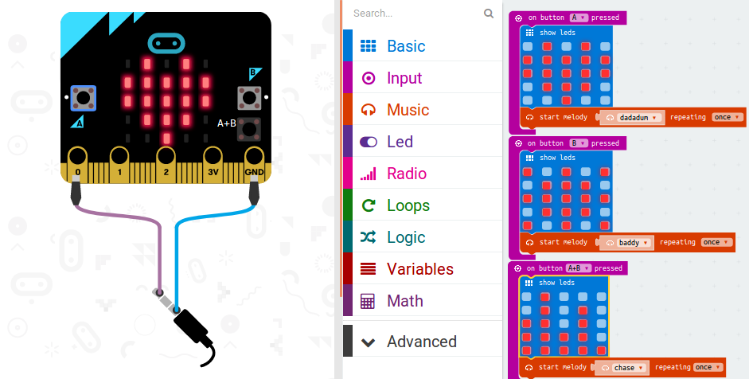
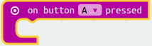
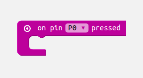

Lời mở đầu
Ebook được tài trợ bởi IoT Maker Việt Nam
Với tốc độ phát triển như vũ bão của khoa học- kỹ thuật ngày nay. Bản thân là cha, mẹ, những người đi trước, luôn mong muốn chuẩn bị cho con mình hành trang tốt nhất để trẻ có cuộc sống tốt đẹp trong tương lai. Việc tiếp cận sớm với khoa học, công nghệ sẽ là bước đệm không thể tốt hơn để các em có thể trở thành những kĩ sư, lập trình viên tài giỏi đóng góp vào sự phát triển của đất nước.
Thấu hiểu điều đó, chúng tôi đã viết cuốn sách này với mục đích truyền cảm hứng, kích thích khả năng tư duy, cũng như khả năng tự học hỏi, tìm tòi và khám phá những cái mới trong mỗi đứa trẻ. Sách được viết theo hướng gần gũi để các em dễ dàng tiếp cận kiến thức, hướng cho trẻ làm các sản phẩm, mô hình thực tế để giúp trẻ nhớ lâu, tăng khả năng sáng tạo.
Sẽ không dễ dàng cho các em khi tiếp cận kiến thức mới nếu thiếu sự hỗ trợ tích cực từ phía các thầy, cô, cha, mẹ và người thân. Hãy giúp bé bắt đầu con đường trở thành những kĩ sư, những lập trình viên hàng đầu thế giới trong 1 tương lai không xa với cuốn sách này nhé.
Đôi lời về tác giả.
Chủ biên của cuốn sách là ông Phạm Minh Tuấn(TuanPM). Với kinh nghiệm nhiều năm làm việc trong mảng lập trình, tác giả xây dựng cuốn sách này với mục đích đóng góp 1 phần nhỏ những kiến thức của mình để giúp khơi dậy sự sáng tạo, khả năng tư duy của các em, những mầm non tương lai của đất nước.
Thuật ngữ hay sử dụng
-
STEM: Là các chữ cái đầu tiên của các từ tiếng anh "Science (Khoa học) - Technology (Công nghệ) - Engineering (Kĩ thuật) - Mathematics (Toán học)", thường được sử dụng khi giải quyết các chính sách giáo dục và lựa chọn chương trình giảng dạy trong các trường học để nâng cao khả năng cạnh tranh trong phát triển khoa học và công nghệ -
Lệnh: Hay còn được gọi là chỉ thị, nhằm ra lệnh cho máy tính thực hiện 1 thao tác nào đó. -
Bluetooth: là một kiểu truyền dữ liệu không dây với khoảng cách ngắn sử dụng sóng radio tần số 2.4Ghz để kết nối các thiết bị. -
Micro:bit: Là 1 board mạch điện tử được sản xuất bởi sự hợp tác của nhiều tập đoàn lớn trên thế giới, nhằm giúp nhằm giúp cho những người trẻ tuổi sáng tạo và phát triển các kỹ năng cốt lõi cần thiết trong lĩnh vực khoa học - công nghệ - kỹ thuật thông qua việc lập trình trên board. -
Blockly: Phương pháp lập trình bằng cách kéo thả các khối. -
Tín hiệu analog: Là 1 loại tín hiệu liên tục theo thời gian, ví dụ trong 1 thời điểm, ở khoảng điện áp từ 0 đến 5v chúng ta có thế lấy ra rất nhiều giá trị điện áp như 0.1V, 3.3V, 4.9V … -
Tín hiệu digital: Là 1 loại tín hiệu rời rạc theo biên độ, ví dụ trong 1 thời điểm ở khoảng điện áp từ 0 đến 5V, Tín hiệu digital chỉ nhận 1 trong 2 giá trị là 0V hoặc 5V, không có các giá trị nào khác.
Giới thiệu nội dung
-
Phần mở đầu - Bài 1: Phần này sẽ giải thích về các từ ngữ thường được nhắc tới liên quan đến mảng giáo dục kiến thức cho trẻ em, cũng như các khái niệm, những thuật ngữ thường được sử dụng trong lập trình.
-
Phần nội dung
-
Bài 2 - Giới thiệu các công cụ giúp các em có thể lập trình, bao gồm board mạch để lập trình là micro:bit, phương thức để lập trình là Blockly và trang web để viết code là makecode.microbit.org. Tiếp theo các em sẽ được thực hành với micro:bit thông qua hướng dẫn đầu tiên với tên gọi hello world (xin chào thế giới).
-
Bài 3 - Phần này tập trung vào giải thích các nhóm lệnh ở trang makecode.microbit.org để các em hiểu rõ và có thể dùng để tra cứu khi lập trình. Kết thúc bài học các em sẽ được ôn lại kiến thức thông qua ví dụ
máy đo tình yêu. -
Bài 4 - Trẻ sẽ rất thích thú khi trải qua bài học này, phần này sẽ cho các em làm các ứng dụng như
Flashing Heartđể nhấp nháy hình trái tim trên micro:bit,Rock Paper Scissorsđể khi lắc micro:bit chúng ta có thể thấy các hình ảnh vui nhộn,Temperatuređể đo nhiệt độ của môi trường vàGuitarđể tạo ra 1 cây đàn ghi-ta đáng yêu. Những ứng dụng này một phần giúp các em ôn lại kiến thức đã học được ở bài trước, mặc khác giúp rèn luyện kĩ năng thực hành. -
Bài 5 - Bài học này sẽ hướng cho trẻ khả năng tư duy và sáng tạo, cũng khá vất vả cho bé để hoàn thành hết những yêu cầu đặt ra là
đo độ ẩm đất,2 micro:bit giao tiếp với nhauvàcảnh báo cho xe lửa, vì vậy các thầy, cô, cha, mẹ và người thân hãy hướng dẫn các em để có được kết quả tốt nhé. -
Bài 6 - Nội dung chính của bài học là truyền dữ liệu giữa 2 micro:bit thông qua sóng radio (không cần dây kết nối). Nhanh lên nào các em, bài học thú vị này đang chờ chúng ta khám phá đấy.
-
Bài 7 - Đây là phần nâng cao của sách, chúng ta sẽ kết nối micro:bit với điện thoại, sử dụng các ứng dụng đã cài đặt trên điện thoại để điều khiển micro:bit thông qua công nghệ truyền dữ liệu Bluetooth. Thầy, cô, cha, mẹ và người thân hãy hỗ trợ các em để hoàn thành bài hướng dẫn này nhé.
-
-
Phần phụ lục -
Cheatsheetgiúp tra cứu nhanh các lệnh thường được sử dụng khi lập trình với Microsoft PXT.
Ai có thể sử dụng?
Đối tượng cuốn sách này hướng đến chủ yếu là các em có độ tuổi từ 8 tuổi trở lên. Tuy nhiên, sẽ là khó khăn cho các em nếu không có sự hướng dẫn tận tình từ phía thầy, cô, cha, mẹ và người thân trong gia đình. Hãy đồng hành cùng các bé để từng bước hoàn thành các hướng dẫn trong cuốn sách.
Mục tiêu mang lại cho người đọc
-
Cuốn sách này biên soạn với mục đích giúp kích thích khả năng tư duy, sáng tạọ cho các em. Đồng thời rèn luyện kĩ năng thực hành và làm việc đội, nhóm.
-
Định hướng cho trẻ sớm tiếp cận với lập trình. Một ngành công nghệ đầy hứa hẹn, luôn phát triển và cần thiết trong bất kì thời đại nào.
Chuẩn bị
Để có thể học cuốn sách này, chúng ta cần 1 số yêu cầu sau:
-
Có ít nhất 1 micro:bit để có thể lập trình.
-
Có 1 máy tính cá nhân để chúng ta viết code trên trang makecode.microbit.org.
-
1 Điện thoại smartphone để cài đặt các ứng dụng để điều khiển micro:bit.
-
Nên có thêm 1 số phụ kiện đi kèm như dây đấu nối, cảm biến, động cơ để thực hành.
- Lời mở đầu
- Giới thiệu nội dung
- Giới thiệu tổng quan
- Hello World
- Lập trình blockly căn bản.
- Một số ứng dụng đơn giản
- Các chức năng khác
- Micro:bit Radio
- Micro:bit nâng cao
- Cheatsheet
- Thành viên tham gia đóng góp và lời kết.
Giới thiệu tổng quan
STEM, về ngành khoa học máy tính và lập trình. Đồng thời, chương này cũng sẽ giới thiệu về board mạch micro:bit sẽ được sử dụng xuyên suốt quyển sách, cùng với đó là các kiến thức cơ bản nhất phục vụ cho việc lập trình với micro:bit.
STEM
Trong nhiều năm trở lại đây, giáo dục STEM đã trở nên phổ biến tại Mỹ và nhiều nước trên thế giới. Ở Việt Nam, các trung tâm giáo dục cũng đã bắt đầu triển khai các chương trình giảng dạy, các khóa học, hay các cuộc thi về STEM. Vậy STEM là gì?
STEM là gì?

Thuật ngữ STEM là viết tắt của Science - Technology - Engineering - Mathematics, thường đi chung với các từ khác để bổ nghĩa như STEM field, STEM workforce hay STEM learning, STEM education. Tuy nhiên, hiện nay thuật ngữ STEM chủ yếu được sử dụng khi nhắc đến một chương trình giáo dục xây dựng dựa trên ý tưởng đào tạo học viên trong bốn lĩnh vực cụ thể - Khoa học, Công nghệ, Kỹ thuật và Toán học. Giáo dục STEM kết hợp các lĩnh vực này lại với nhau, gắn kết chúng thành một mô hình học tập liên ngành, đào tạo cho học viên thông qua các bài học và ứng dụng thực tế. Nhờ vậy, học viên không chỉ được trang bị kiến thức về các lĩnh vực chuyên môn mà còn được rèn luyện khả năng tư duy, sáng tạo, kỹ năng thực hành và đặc biệt là kỹ năng giải quyết vấn đề.
Đặc điểm giáo dục STEM
Là sự kết hợp giữa nhiều lĩnh vực: Thay vì tách riêng các ngành, các lĩnh vực ra để giảng dạy, giáo dục STEM lồng ghép chúng vào trong các ứng dụng cụ thể. Qua đó thể hiện mối liên hệ bổ trợ lẫn nhau giữa các ngành, các lĩnh vực liên quan.
Các bài học ứng dụng thực tế: Việc kết hợp các tình huống, các vấn đề thực tế liên quan đến các kiến thức khoa học vào bài giảng là góp phần thu hẹp khoảng cách giữa lý thuyết và thực tế. Bên cạnh đó, các công nghệ mới thường được đưa vào sử dụng để khuyến khích sự quan tâm, tăng sự thích thú cho các giờ học.
Đối tượng hướng đến gồm nhiều nhóm tuổi khác nhau, đa phần là học sinh. Đối với mỗi độ tuổi nhất định, học viên sẽ có chương trình giáo dục riêng, thấp nhất là cấp tiểu học.

Mục tiêu
Không chỉ đơn thuần là đào tạo ra các kỹ sư, nhà khoa học trong tương lai, giáo dục STEM hướng đến việc truyền cảm hứng cho các học viên, khả năng nhận thức về sự phát triển của xã hội, phát triển năng lực của bản thân trong thời đại hiện nay.
STEM & ART (STEAM)
Dựa trên phương pháp giáo dục STEM, người ta đưa ra thêm một phương pháp giáo dục mới kết hợp các lĩnh vực trong giáo dục STEM và lĩnh vực nghệ thuật (Art) gọi tắt STEAM. Đây được xem như một phương pháp giáo dục sớm cho trẻ mầm non, giúp trẻ phát triển các kỹ năng cần thiết trong bối cảnh khoa học công nghệ đang phát triển như hiện nay. Trong đó, yếu tố nghệ thuật đóng vai trò then chốt, bổ sung cho STEM bởi vì sự sáng tạo nghệ thuật chính là động lực của sự phát triển và đổi mới.
Khoa học máy tính
Giới thiệu tổng quan
Máy tính là một hệ thống gồm nhiều thiết bị ghép nối với nhau, thực hiện các chức năng đã được định nghĩa trước đó. Ban đầu, những chiếc máy tính có kích thước rất lớn và người ta sử dụng nó để phục vụ cho việc tính toán số học. Do sự phát triển của khoa học - công nghệ, kích thước của những chiếc máy tính đã dần thu nhỏ lại đến mức đáng kinh ngạc, cùng với đó là khả năng xử lý thông tin với tốc độ cực kì cao. Máy tính ngày nay đã trở thành một phần không thể thiếu trong cuộc sống của con người.
Khi nhắc đến máy tính, người ta thường nghĩ ngay đến các máy tính để bàn (máy tính cá nhân) hay laptop. Đây là những loại máy tính phổ biến nhất hiện nay. Ngoài ra, máy tính còn xuất hiện với nhiều hình dạng và kích thước khác nữa, ví dụ như điện thoại thông minh, máy tính bảng, máy chụp hình hay trong các mô hình đồ chơi điều khiển,.. Tất cả chúng đều được xem là máy tính.
Các thành phần của máy tính
Một máy tính trên thực tế có rất nhiều thành phần phức tạp. Tuy nhiên, để có thể hoạt động được, tất cả các máy tính đều phải đảm bảo có các thành phần cơ bản như sau:
Bộ xử lý trung tâm (CPU): Đây là thành phần đóng vai trò quan trọng nhất trong một chiếc máy tính. Bộ xử lý trung tâm được coi là bộ não của máy tính. Tất cả mọi hoạt động của máy tính đều phải thông qua bộ này để xử lý.
Bộ nhớ (Memory): Là nơi lưu trữ các dữ liệu của máy tính.
Các thành phần input/output: Các thành phần bên ngoài hay còn gọi là thiết bị ngoại vi giúp người dùng có thể giao tiếp với máy tính.
Chức năng máy tính
Ngày nay, máy tính không chỉ được sử dụng để tính toán mà còn có thể thực hiện vô số các chức năng khác:
-
Máy tính với công việc văn phòng: Máy tính dùng để soạn thảo các văn bản, dễ dàng tìm kiếm, bổ sung, chỉnh sửa cũng như lưu trữ các dữ liệu.
-
Máy tính trong thiết kế, xây dựng: Các bản vẽ được thực hiện bởi máy tính có độ chính xác rất cao, giúp ích rất nhiều cho công việc của các kĩ sư. Ngoài ra, máy tính còn có thể mô phỏng các mô hình thiết kế 2D, 3D.
-
Máy tính trong giải trí: có thể dùng để nghe nhạc, xem phim, chơi game, …
Ngoài ra, máy tính còn được ứng dụng rộng rãi trong rất nhiều các lĩnh vực khác như giáo dục, y tế, thương mại, quốc phòng, …
Ngôn ngữ máy
Tuy rất thông minh nhưng về cơ bản, máy tính cũng chỉ là một "chiếc máy", nó không thể suy nghĩ như con người mà chỉ có thể làm theo các lệnh đã được thiết lập sẵn. Vậy làm thế nào để ra lệnh cho máy tính ?
Một chiếc máy tính chỉ nhận biết được hai loại tín hiệu là 1 và 0, tương ứng với "có" hoặc "không". Vì vậy tất cả các dữ liệu khi đưa vào máy tính đều phải ở dưới dạng các chữ số 0 và 1. Các con số 0, 1 nối tiếp nhau sẽ tạo thành các chuỗi 0 và 1, gọi là chuỗi nhị phân. Chuỗi nhị phân có thể biểu diễn được rất nhiều thứ, ví dụ như hình ảnh, phim, website hay game, … Tuy nhiên, máy tính không hiểu những thứ đó, nó chỉ biết đây là các chuỗi nhị phân mà thôi. Cũng nhờ vào các chuỗi nhị phân này mà ta có thể ra lệnh cho máy tính.
Giới thiệu về Blockly
Đôi nét về lập trình
Như chúng ta đã biết, máy tính chỉ có thể hiểu được ngôn ngữ máy - chính là các chuỗi số dạng nhị phân. Điều này khiến cho việc giao tiếp giữa con người với máy tính trở nên khó khăn, bởi các chuỗi nhị phân thì không dễ nhớ chút nào. Vì thế nên người ta đã tạo ra những ngôn ngữ khác gần gũi với con người hơn mà bằng cách nào đó, máy tính vẫn có thể hiểu được. Những ngôn ngữ như vậy gọi là ngôn ngữ lập trình. Hiện nay, trên thế giới có rất nhiều ngôn ngữ lập trình khác nhau, một số ngôn ngữ phổ biến có thể kể đến như là C, C++, C#, Java, JavaScript, PHP, Python,.. Mỗi ngôn ngữ lập trình đều có những điểm mạnh và điểm yếu riêng trong từng lĩnh vực cụ thể mà nó được ứng dụng.

Ứng dụng chung của tất cả các ngôn ngữ lập trình chính là để viết chương trình. Khi muốn ra lệnh cho máy tính, ta sẽ viết các lệnh đó bằng ngôn ngữ lập trình. Sau đó sử dụng một chương trình gọi là trình biên dịch để chuyển các lệnh đó sang ngôn ngữ máy, nhờ vậy máy tính có thể hiểu được các câu lệnh và thực hiện chúng. Công việc viết ra các lệnh để điểu khiển máy tính như vậy gọi là lập trình. Tập hợp nhiều lệnh đó sẽ tạo thành một chương trình.
Giới thiệu lập trình bằng Blockly
Blockly là một trong nhiều những môi trường lập trình theo kiểu mô hình đang rất phát triển hiện nay. Lập trình Blockly được hiểu là một dạng lập trình bằng cách "kéo, thả". Đây là một công cụ cực kì hữu ích, giúp cho việc lập trình trở nên đơn giản hơn bao giờ hết. Để có thể viết ra một chương trình, tất cả những gì chúng ta phải làm đó là chọn các khối lệnh và kéo, thả mà thôi. Với những khối màu sắc bắt mắt, việc lập trình sẽ trở nên thật thú vị. Qua đó kích thích khả năng tư duy và sáng tạo của trẻ.
Ngoài ra, lập trình Blockly còn có những ưu điểm sau:
-
Có thể chuyển đổi chương trình sang dạng chữ, giúp cho người dùng có thể tối ưu các thuật toán.
-
Đây là một dự án mã nguồn mở, bạn có thể làm mọi thứ với nó cũng như sử dụng trong các ứng dụng của riêng mình.
-
Có khả năng mở rộng bằng cách tạo thêm hay xóa đi những khối không cần thiết phục vụ cho nhu cầu của bạn.
-
Blockly đã và đang trở nên phổ biến trên toàn thế giới.
Board mạch micro:bit
Trong chương sau, chúng ta sẽ nói kỹ hơn về board micro:bit này cũng như cách sử dụng nó. Ở chương này chỉ nhằm mục đích giới thiệu về board micro:bit.
Phần cứng:
Board micro:bit có kích thước nhỏ (4 x 5 cm), gồm 1 ma trận led 5 x 5 để hiển thị, 2 nút bấm lập trình được, 1 nút reset, 3 chân in/out, cùng với một vài led để báo hiệu.
Nạp chương trình:
Để nạp chương trình cho board micro:bit, ta chỉ cần copy file chương trình (.hex) vào ổ đĩa MICROBIT. Khi đó, chương trình sẽ được nạp và file chương trình cũng sẽ biến mất. Trong lúc nạp, đèn báo màu vàng trên board micro:bit sẽ nhấp nháy.
Sử dụng Micrsoft PXT
Giới thiệu Microsoft PXT
Microsoft PXT (Programming eXperience Toolkit) hay còn được biết đến với tên gọi Microsoft MakeCode, do hãng Microsoft phát triển, là một môi trường giúp những người mới bắt đầu có thể dễ dàng tiếp cận với công việc lập trình. Tính năng chính của nó là tạo ra một chương trình biên tập sử dụng lập trình Blockly. Ngoài ra còn trang bị thêm các chức năng như mô phỏng hay chuyển chương trình sang dạng text (dạng chữ đọc được). Microsoft PXT mang khoa học máy tính vào cuộc sống cho tất cả học viên với các dự án thú vị và kết quả nhanh chóng.
Sử dụng Microsoft MakeCode
Giao diện của Microsoft MakeCode có các phần sau đây:
-
Phần khoảng trống để lập trình ở nằm bên phải.
-
Phần board micro:bit bên trái để mô phỏng.
-
Ở giữa chính là các nhóm lệnh khối để sử dụng khi lập trình.
Cách thực hiện:
-
Bước 1: Ta tiến hành kéo các lệnh trong nhóm lệnh ở giữa vào phần khoảng trống bên phải để lập trình. Ví dụ là lệnh
show ledstrong nhóm lệnhBasic: -
Bước 2: Quan sát sự thay đổi trên board micro:bit mô phỏng bên trái màn hình.
-
Bước 3: Bật tắt các led để thay đổi hình dạng. Quan sát hình ảnh mô phỏng.
Tổng kết
Như vậy, qua chương này, ta đã biết được giáo dục STEM là gì và những ảnh hưởng tích cực của nó trong việc đào tạo con người. Đây cũng chính là mục tiêu của quyển sách này.
Bên cạnh đó, chúng ta cũng đã được cung cấp cái nhìn cơ bản nhất về máy tính cũng như giới thiệu về board mạch micro:bit và một số các ngôn ngữ lập trình. Tuy nhiên, chương đầu tiên này chỉ nhằm mục đích giới thiệu và đưa ra các khái niệm có liên quan. Còn rất nhiều điều thú vị nữa đang chờ chúng ta khám phá đấy.
Hello World
Giới thiệu Micro:bit
Micro:bit là board mạch có kích thước nhỏ, có thể xem như một máy tính mini lập trình được, tích hợp khả năng phát hiện chuyển động, la bàn và công nghệ Bluetooth.
Được phát triển dựa trên sự hợp tác của 29 đối tác, bao gồm các hãng công nghệ lớn như ARM, Microsoft, hay Samsung,.. Micro:bit thực sự là một lựa chọn tuyệt vời đối với giáo dục. Hướng đến mục tiêu truyền cảm hứng cho những người trẻ tuổi để sáng tạo và phát triển các kỹ năng cốt lõi cần thiết trong lĩnh vực khoa học - công nghệ - kỹ thuật.
Về phần cứng
Với kích thước nhỏ gọn (4 x 5 cm) cùng màu sắc bắt mắt, micro:bit là board mạch được thiết kế vui nhộn và rất dễ sử dụng. Hãy cùng điểm qua các phần chính trên board micro:bit.
Mặt trước bao gồm:
-
25 led đơn.
-
2 nút nhấn lập trình được.
-
3 chân truy xuất analog/digital được đánh số từ 0 đến 2.
-
Chân 3V và GND là chân dùng để cấp nguồn cho các thiết bị bên ngoài.
Mặt sau bao gồm:
-
CPU chính là một vi xử lý ARM Cortex M0 32-bit, tích hợp công nghệ BLE (Bluetooth Low Energy).
-
1 cổng kết nối USB.
-
1 cổng để gắn pin (sử dụng nguồn DC 3V).
-
1 nút bấm reset.
-
Cảm biến gia tốc (accelerometer) và cảm biến từ (magnetometer hay compass).
-
1 ăng-ten Bluetooth.
LED
Các LED màu đỏ ở mặt trước được sắp xếp thành các hàng và cột với kích thước 5 x 5. Chúng có thể được điều khiển bật/tắt tùy thuộc vào chương trình.
Nút nhấn
Có 2 nút nhấn A và B được xem như là tín hiệu điều khiển. Khi nút nhấn được nhấn, sẽ có tín hiệu gửi đến bộ xử lý để xử lý. Nhờ vậy, micro:bit có thể phát hiện được khi nào một trong hai nút được nhấn hay cả hai nút được nhấn cùng lúc.
Ngoài ra, ở mặt sau của micro:bit còn có 1 nút nhấn RESET. Đây là nút nhấn hệ thống dùng để khởi động lại chương trình.
Cảm biến từ
Cảm biến từ (magnetometer) hay la bàn (compass) là một thành phần được tích hợp trên board micro:bit với khả năng phát hiện từ trường (ví dụ là từ trường Trái Đất). Nhờ đó, nó có thể phát hiện được hướng di chuyển cũng như góc lệch khi ta di chuyển board micro:bit.
Cảm biến gia tốc
Tên chính xác của nó là Accelerometer, một loại cảm biến có khả năng phát hiện được chuyển động khi di chuyển, lắc, rơi hay dùng để đo độ nghiêng,..
Các chân ngõ vào/ ra
Gồm 3 chân được đánh số lần lượt là 0 , 1 và 2. Với các chân này, ta có thể gắn thêm các cảm biến bên ngoài như cảm biến nhiệt độ, hay cảm biến đo độ ẩm,… Các chân này vừa có thể là chân input (ngõ vào) để đọc giá trị cảm biến, vừa có thể làm chân output (ngõ ra) để xuất các tín hiệu ra.
Ứng dụng
Chúng ta hãy điểm qua một số ứng dụng vui sử dụng mirco:bit :
Flash heart: Một trong những ứng dụng đơn giản để bắt đầu với micro:bit chính là tạo ra các hình dạng khác nhau từ led ma trận có thể nhấp nháy.
Step Counter: Đi bộ là một trong những cách tập thể dục đơn giản mà ai cũng có thể thực hiện. Ứng dụng này sẽ đếm số bước chân của bạn và hiển thị lên led của micro:bit.
Remote Selfies: Chụp hình, selfie cùng mọi người và chia sẻ hình ảnh trên mạng xã hội đang là xu hướng của giới trẻ hiện nay. Với ứng dụng Remote Selfie, chúng ta có thể tạo ra những bức ảnh đẹp nhất, phong cách nhất mà không cần phải nhờ ai bấm máy hộ.
Compass: La bàn là vật không thể thiếu mỗi khi đi leo núi, cắm trại hay du lịch trong những khu rừng. Giờ đây, với micro:bit, Chúng ta có thể tự tạo cho mình một chiếc la bàn điện tử để không bị lạc đường.
Lưu ý
Tuy sử dụng board micro:bit rất thú vị và đơn giản, nhưng thiết kế của board là thiết kế mở, cho phép ta tiếp xúc được với các phần tử, linh kiện điện tử ở bên trong. Điều đó đồng nghĩa với việc có nguy cơ nhỏ các phần tử này bị quá nhiệt, hay thậm chí là hư hỏng. Tuy nhiên, bạn không cần phải lo lắng quá nhiều, chỉ cần cẩn thận một chút và lưu ý những điều sau đây, chúng ta sẽ có những phút giây vui chơi, học tập thật thú vị.
Một số lời khuyên khi sử dụng board micro:bit
-
Luôn để micro:bit trong túi chống tĩnh điện khi không sử dụng.
-
Chỉ cầm board ở các cạnh, hạn chế chạm vào các phần tử trên mặt board khi đang được cấp nguồn.
-
Chỉ sử dụng pin bộ (battery pack) hoặc cable (dây cáp) USB để cấp nguồn cho board micro:bit. Không được dùng sạc di động để cấp nguồn vì có thể gây hư hại cho board hoặc dừng hoạt động đột ngột.
-
Không nên giữ lại những board micro:bit đã bị lỗi, hoặc bị hỏng.
Ngoài ra, bạn có thể đọc thêm về các lời khuyên an toàn khi sử dụng board micro:bit ở đây: microbit.org/assets/documents/microbit-safety-guide-090617.pdf .
Bắt đầu với Micro:bit
Làm quen với micro:bit
Sử dụng board micro:bit vô cùng dễ dàng. Hãy cùng bắt đầu với 5 bước đơn giản sau:
1. Kết nối
Kết nối board micro:bit với máy tính của bạn thông qua cable micro USB. Board micro:bit khi đó sẽ hiện trên máy tính của bạn như một ổ đĩa mới (giống như ô đĩa USB) với tên gọi "MICROBIT". Tuy nhiên, hãy để ý nhé, đây không phải ổ đĩa USB thông thường đâu.
2. Lập trình
Sử dụng Microsoft MakeCode (đã được làm quen ở chương trước) để tiến hành viết chương trình đầu tiên của bạn.
3. Nạp chương trình
Sau khi viết xong chương trình, nhấn vào nút Download để tiến hành tải chương trình về máy. Chương trình được tải dưới dạng một file có đuôi .hex để micro:bit có thể đọc được. Sau khi tải xong, ta tiến hành copy file này vào ổ đĩa "MICROBIT". Trong lúc chương trình được nạp, micro:bit sẽ dừng các hoạt động khác và nháy led vàng ở phía sau để báo hiệu.
4. Trải nghiệm
Sau khi nạp xong, chương trình sẽ tự động chạy trên board micro:bit và một lưu ý nhỏ là file chương trình sau khi copy vô ổ đĩa MICROBIT sẽ biến mất. Bạn có thể bấm nút RESET ở phía sau bất cứ lúc nào để chạy chương trình lại từ đầu. Hãy cùng trải nghiệm các tính năng thú vị của micro:bit.
5. Làm chủ micro:bit
Bên cạnh lập trình bằng Blockly, bạn cũng có thể sử dụng ngôn ngữ lập trình như Python hay JavaScript dạng text để lập trình cho micro:bit. Tất nhiên, bạn cũng cần phải có kiến thức về các ngôn ngữ lập trình này. Ngoài ra, hãy thử làm những ứng dụng khác với micro:bit, bạn sẽ thấy nhiều điều bất ngờ đấy.
Hello World
Thực hành làm ứng dụng đơn giản đầu tiên, đó là hiện chữ "Hello World" trên board micro:bit
Chuẩn bị
-
1 board micro:bit.
-
1 dây cáp micro USB.
-
1 máy tính.
Thực hiện
Kết nối: Thực hiện kết nối board micro:bit với máy tính bằng dây cáp micro USB.
Lập trình: Trước tiên, ta cần phải tạo chương trình để hiện chữ "Hello World". Tiến hành mở giao diện Microsoft MakeCode bằng cách truy cập vào makecode.microbit.org. Ta nhấp chọn nhóm lệnh Basic, sau đó chọn lệnh show string và kéo lệnh này vào bên trong khối on start.
Quan sát sự thay đổi trên board micro:bit được mô phỏng ở bên trái màn hình.
Sửa lại chữ "Hello" ban đầu thành "Hello world", quan sát mô phỏng.
Lần này, thay vì kéo lệnh show string vào khối on start, hãy kéo nó vào bên trong khối forever. Quan sát sự khác nhau giữa chúng.
Tới đây, chúng ta đã có một chương trình hiện chữ "Hello world" rồi, hãy qua bước tiếp theo để nạp chương trình nhé.
Nạp chương trình: Nhấn vào nút Download trên màn hình để tải file chương trình về máy tính. File này có đuôi ".hex".
Sau khi tải xong, hãy copy file này vào trong ổ đĩa MICROBIT để nạp chương trình. Tới đây, đèn led vàng phía mặt sau của board sẽ nháy.
Trải nghiệm: Khi nạp xong chương trình, trên board micro:bit sẽ hiện chữ "Hello world" chạy trên nền các led ma trận. Thật thú vị phải không nào. Hãy sửa lại chương trình theo ý mình và khám phá các chức năng khác của micro:bit nhé.
Tổng kết
Kết thúc chương này, chúng ta đã nắm được các kiến thức cơ bản về board micro:bit, cách viết chương trình bằng Microsoft MakeCode và nạp chương trình cho board. Bên cạnh đó, bạn cũng nên đọc kĩ các nguyên tắc an toàn khi sử dụng board micro:bit để không làm hư hỏng board, cũng như đảm bảo an toàn cho bản thân nhé.
Lập trình blockly căn bản.
Kiến thức cơ bản.
Chúng ta sẽ làm quen với lập trình, cách suy nghĩ, lập luận logic thông qua nhân vật Computer nhé.
Tư duy logic, thuật toán.
Hằng ngày chúng ta đều phải đến trường để học tập và vui chơi cùng bạn bè đúng không? Computer cũng vậy đó. Nhưng nhà Computer rất xa nên Computer rất là khó để nhớ đường, vì vậy Computer mới nghĩ ra một cách để có thể ghi nhớ được đường tới trường. Các bạn có muốn biết không?
Rất đơn giản, Computer sẽ chia quãng đường ra thành từng bước:
-
Bước 1: Computer sẽ đi từ nhà đến vị trí A.
-
Bước 2: Từ vị trí A Computer sẽ đi tiếp đến vị trí B..
-
Bước 3: Cuối cùng là Computer sẽ đi thẳng tới trường. Vậy là đến nơi rồi.
Nếu chia thành từng bước thì rất dễ nhớ đúng không? Nhưng giờ có một bạn Mèo cũng muốn đi từ nhà đến trường nhưng bạn mèo không đi theo trình tự mà bạn ấy chỉ đi theo đường nào mà bạn ấy thích. Vậy bạn Mèo có đến được trường không?
Đúng rồi, bạn Mèo sẽ rất dễ bị lạc đường và không đến được trường. Đó là sự khác nhau giữa bạn mèo và chúng ta đó, chúng ta có thể tư duy, suy nghĩ để tìm cho mình đường đến trường nhưng bạn Mèo thì không. Đó gọi là tư duy logic đó!
Tư duy logic giúp chúng ta phát triển trí khả năng suy nghĩ, tư duy để tổ chức công việc một cách hiệu quả nhất.
Mục đích ban đầu của Computer là đi đến trường và để thực hiện được mục đích đó thì Computer phải tiến hành theo 3 bước như trên đúng không nè. Đó gọi là thuật toán.
Thuật toán là một số các thao tác được thực hiện liên tục để đạt được mục đích xác định trước.
Biến là gì, các thao tác với biến với computer.
Sáng nay đi học, mẹ cho Computer 5000 đồng để ăn quà vặt. Nhưng Computer không thích ăn quà vặt vì dễ bị sâu răng lắm nên tớ quyết định sẽ để tiết kiệm số tiền đó. Các bạn đoán xem vật nào dùng để lưu giữ tiền tiết kiệm của Computer nè?
Đúng rồi! Đó là bạn Heo đất. Bạn ấy sẽ giữ tiền tiết kiệm của Computer. Trong lập trình cũng vậy đó, khi Computer muốn lưu giữ một giá trị nào thì tớ sẽ sử dụng tới Biến.
Biến là một vùng nhớ trong máy tính để lưu trữ giá trị
Các thao tác với biến
Chúng ta sẽ có một số thao tác cơ bản với như sau:
-
Tạo một biến.
Việc này cũng giống như chúng ta mua một con heo đất và con heo đất đó sẽ chứa giá trị ( số tiền tiết kiệm).
-
Khởi tạo giá trị cho biến.
Khi có heo đất rồi thì bạn sẽ nhét tiền tiết kiệm đúng không nào. Trong lập trình cũng vậy, khi một biến được tạo, chúng ta sẽ gán giá trị ban đầu cho biến đó.
-
Thay đổi giá trị của biến.
Giá trị của biến có thể thay đổi theo ý muốn của chúng ta, như việc bạn có thể nhét tiền thêm vào con heo đất vậy.
Các phép so sánh logic
Trạng thái logic TRUE/FALSE
Trong toán học, bất kì biểu thức nào cũng chỉ có một trong hai kết quả, đúng hoặc là sai. Ví dụ như 5 > 6 là sai, 4 > 3 là đúng.
Còn trong lập trình cũng tương tự, mọi biểu thức đều chỉ có hai trạng thái logic là true hoặc false. Ví dụ như:
-
5 > 6 sẽ trả về trạng thái logic là false (không đúng).
-
4 > 3 sẽ trả về trạng thái logic là true (đúng).
Các phép toán so sánh
Thầy, cô đã từng dạy cho chúng ta các phép toán so sánh như >, <, = đúng không. Trong lập trình cũng vậy, các phép so sánh trên đều có nhé. Giả sử Computer có 2 biến a = 5 và b = 6 thì biến nào sẽ lớn hơn đây ?
Đáp án là a < b đúng không! Nhưng bên cạnh đó còn có một số phép so sánh logic như:
-
>= Lớn hơn hoặc bằng.
-
< = Bé hơn hoặc bằng.
-
!= Khác.
Cùng với đó là một số các toán tử logic như and, or, not, hãy cùng với Computer tìm hiểu nhé!
Toán tử logic OR - kí hiệu là ||
Chúng ta có thể hiểu or có nghĩa là hoặc. Một ví dụ để dễ hiểu nhé!. Mẹ nói với Computer là " Nhặt rau phụ mẹ hoặc là quét dọn nhà cửa thì Computer mới được đi chơi". Các bạn thấy không, để Computer được đi chơi thì Computer phải cần làm ít nhất một việc là phụ mẹ nhặt rau hay là quét dọn nhà cửa thôi. Đơn giản phải không nào!
Trong lập trình, A or B trả về giá trị true khi một trong A hoặc B là true
Toán tử logic AND - &&
And có nghĩa là và. Cũng như trường hợp trên, nhưng giờ mẹ bảo Computer là "Con nhặt rau phụ mẹ và quét dọn nhà cửa thì mới được đi chơi". Lúc này, Computer phải thực hiện cả hai việc mẹ giao là nhặt rau và dọn dẹp thì mới được đi chơi.
Từ đây chúng ta có thể thấy sự khác biệt. Với A or B chúng ta chỉ cần đảm bảo một trong hai mệnh đề A hoặc B là true ( đúng) thì phép toán đó sẽ trả về giá trị là true. Nhưng với A and B thì phải đảm bảo cả hai mệnh đề A và B điều là true thì phép toán đó mới trả về giá trị là true.
Một số bài toán ví dụ nhé:
-
5 > 3 or 3 > 4 . Kết quả là true (vì toán tử logic or chỉ cần một trong hai mệnh đề là true).
-
5 < 3 or 3 > 4 . Kết quả là false (vì không có mệnh đề nào là true cả).
-
5 <3 and 3 < 4 . Kết quả là false (vì toán tử logic and cần tất cả mệnh đề đều phải true).
-
5 > 3 and 3 < 4 . Kết quả là true (vì cả hai mệnh đề trong toán tử and đều true).
Not - !
Not có nghĩa là phủ định. Not A sẽ phủ định ngược lại trạng thái logic của A.
Lập trình bằng Blockly
Để tìm hiểu rõ hơn về lập trình bằng Blockly, hãy cùng Computer truy cập vào website: makecode.microbit.org
Tại đây, giao diện chính sẽ xuất hiện như sau:
Bây giờ, chúng ta sẽ tìm hiểu chức năng của từng nhóm lệnh nhé:
Nhóm lệnh cơ bản-Basic
Để sử dụng các khối chức năng trong nhóm lệnh cơ bản Basic ta truy cập vào thẻ Basic như hình sau:
Chức năng của từng khối
Chúng ta có thể sử dụng nhóm lệnh cơ bản ( Basic) để hiển thị hình ảnh trên màn hình LED của micro-bit.
Khối forever
Chúng ta hãy bắt đầu với khối này trước nhé. Khối forever sẽ thực hiện lặp lại một công việc, nhóm lệnh mà chúng ta quy định với số lần lặp là vô tận, có nghĩa là chương trình của chúng ta sẽ hoạt động mãi mãi trong khối này.
Để thực hiện, chúng ta chỉ cần kéo thả khối lệnh cần lặp vào trong khối forever thôi nhé. Rất đơn giản phải không nào!
Khối show number
Ở khối show number, chúng ta có thể hiển thì số nguyên mà bạn muốn. Số nguyên này có thể thiết lập được bằng cách nhấp vào vị trí có hiện số của khối show number.
Khối show string
Cũng tương tự như khối show number, nhưng ở khối show string thì computer có thể hiện được các chữ mong muốn. Chúng ta có thể nhấp vào vị trí hiện kí tự của khối để thiết lập ghi các chữ mong muốn.
Khối show icon
Khối này chứa các icon (biểu tượng) đã được thiết lập sẵn, chúng ta chỉ cần lựa chọn icon mình thích để hiển thị thôi. Rất nhiều icon thú vị đang chờ các bạn khám phá!
Khối show arrow
Đúng như tên gọi của nó, khối show arrow sẽ giúp chúng ta hiển thị mũi tên theo một hướng mà mình mong muốn. Khối này rất phù hợp cho những bạn muốn cải thiện khả năng nhận biết phương hướng đó nhé!
Khối show leds
Đây là khối mà Computer rất thích! Khối này giúp Computer và các bạn tự do sáng tạo các hình ảnh mà mình thích để hiển thị lên màn hình LED đó. Rất đơn giản, chỉ cần chúng ta nhấp vào vị trí tương ứng với LED trên micro:bit thì LED đó sẽ sáng lên. Rất là thú vị đúng không nào.
Khối pause
Trong nhiều trường hợp, Computer muốn hiển thì lần lượt 2 hình ảnh, hình thứ nhất hiện thị trong 2 giây rồi chuyển qua hình thứ 2 vậy lúc này Computer phải làm thế nào đây? Khối pause sẽ giúp Computer giải quyết vấn đề này. Khối này sẽ giúp ta dừng hình ảnh với thời gian mong muốn.
Để biết thêm chi tiết về các khối trong nhóm Basic , chúng ta hãy truy cập địa chỉ web: makecode.microbit.org/reference/basic
Nhóm lệnh vòng lặp-Loops
Cũng như chức năng của khối forever trong nhóm lệnh basic mà chúng ta đã tìm hiểu, nhóm lệnh vòng lặp với số lần quy định hoặc với một điều kiện cụ thể.
Khối repeat
Khối này sẽ giúp cho chúng ta thực hiện lặp một công việc cụ thể với số lần mong muốn. Chúng ta có thể dễ dàng thiết lập số lần lặp ở ô repeat và lựa chọn công việc muốn lặp bằng cách kéo thả các khối vào ô do.
Khối for-from-do
Tương tư khối repeat, Khối for-from-do cũng thực hiện lặp một công việc với số lần mong muốn. Nhưng điểm khác biệt là chúng ta sẽ dùng một biến để đếm số lần mà chúng ta muốn lặp.
Giá trị ban đầu của biến sẽ là 0, sau mỗi lần lặp giá trị của biến sẽ tăng lên một đến khi giá trị của biến đạt đến giá trị tối đa mà chúng ta quy định (giá trị này được thiết lặp ở ô to) thì vòng lặp sẽ kết thúc.
Khối while - do
Khối while-do sẽ thực hiện lặp công việc khi một điều kiện được thỏa mãn (true). Nếu điều khiện đó không được thỏa mãn (false) thì vòng lặp while-do sẽ kết thúc.
Nhóm lệnh Logic-Logic
Khối if-then và if-then-else
Đầu tiên, Computer muốn các bạn hiểu thế nào là if. Mẹ Computer hay nói "Nếu con đạt điểm 10 thì mẹ sẽ thưởng con một món quà". Tức là Computer chỉ nhận được quà khi đạt điểm 10 còn nếu không thì sẽ không có phần thưởng từ mẹ. Phải cố gắng để đạt nhiều điểm 10 mới được!
Trong lập trình cũng vậy, khi điều kiện của if đúng (true) thì sẽ thực hiện công việc trong phần then. Còn nếu điều khiện của if là sai (false) thì công việc trong phần else sẽ được thực hiện.
Khối các phép so sánh logic
Các phép logic như >,<,=,and,or,… chúng ta đã thảo luận rồi đúng không nè. Bây giờ mình chỉ cần áp dụng vô thôi. Thông thường các phép so sánh logic sẽ được dùng làm điều kiện cho khối lặp while-do hoặc khối if then else.
Nhóm lệnh về biến-Variables
Các thao tác với biến đều nằm trong nhóm lệnh này nhé, chúng ta sẽ có:
Tạo tên biến với "Make a Variable"
Đặt giá trị cho biến với "set - to"
Thay đổi giá trị biến với "change-by"
Nhóm lệnh về toán học-Math

Các khối phép tính toán học số học +, -, x, : sẽ nằm trong khối này. Chúng ta có thể thực hiện các phép toán =, -, x, : giữa các biến và các số với nhau một cách dễ dàng.
Đồng thời, chúng ta còn được hỗ trợ thêm 2 khối khá là thú vị đó là pich random 0 to và pich random true or fail.
-
Khối pich random 0 to sẽ cho chúng ta một giá trị ngẫu nhiên trong phạm vi được thiết lập.
-
Khối pich random true or fail sẽ trả về ngẫu nhiên giá trị true hoặc false.
Nhóm lệnh ngõ vào-Input
Trong lập trình, việc xác định được dữ liệu vào/ra là bước đầu tiên để giải quyết một bài toán. Nhóm lệnh này không những cung cấp cho chúng ta các khối dữ liệu ngõ vào từ cảm biến như nhiệt độ, ẩm độ, gia tốc, cường độ ánh sáng… mà còn cung cấp các khối sự kiện như nhấn nút nhấn để thực hiện công việc cụ thể nào đó. Một số khối mà chúng ta cần tìm hiểu như:
Thực hiện một công việc cụ thể khi nút nhấn (A, B hoặc cả A và B) được nhấn và thả.
Thực hiện một công việc cụ thể khi một hành động, cử chỉ nào đó được thực hiện song ( ví dụ như việc lắc micro:bit).
Thực hiện một công việc cụ thể khi chân điều khiển(P0,P1,P2) được chạm và thả ra (Đồng thời chạm vào chân GND khi thực hiện).
Lấy trạng thái của nút nhấn (được nhấn hoặc không).
Lấy dữ liệu về hướng của la bàn theo đơn vị độ (o).
 Kiểm tra chân điều khiển (P0, P1, P2) có được nhấn hay không.
Kiểm tra chân điều khiển (P0, P1, P2) có được nhấn hay không.
 Lấy dữ liệu về nhiệt độ theo đơn vị oC.
Lấy dữ liệu về nhiệt độ theo đơn vị oC.
Lấy giá trị gia tốc (mg) khi micro:bit được đặt nằm bằng phẳng, màn hình hướng lên, x=0, y=0 và z=-1024.
Lấy giá trị cường độ sáng của màn hình LED. Giá trị này nằm trong khoảng từ 0 (tối) đến 255 ( sáng).
 Lấy góc quay khi xoay tròn dọc theo trục x hoặc trục y của thiết bị.
Lấy góc quay khi xoay tròn dọc theo trục x hoặc trục y của thiết bị.
Lấy giá trị cường độ từ trường theo đơn vị micro-Tesla.
 Lấy thời gian hoạt động của thiết bị kể từ khi khởi động theo đơn vị mili giây (ms).
Lấy thời gian hoạt động của thiết bị kể từ khi khởi động theo đơn vị mili giây (ms).
Thiết lập một phần micro:bit để đo gia tốc ( micro:bit đang tăng tốc hay chậm đi bao nhiêu).
Để tìm hiểu kĩ hơn về các khối lệnh và xem ví dụ minh họa, chúng ta hãy truy cập vào địa chỉ web sau: makecode.microbit.org/reference/input
Nhóm lệnh âm nhạc - Music
Một nhóm lệnh mà Computer rất thích, nó vừa giúp chúng ta sáng tạo vừa giúp chúng ta thư giãn sau những giờ học tập căng thẳng.
Và giờ hãy khám phá xem chúng ta có những gì trong khối này nhé!
Phát một âm điệu trong một khoảng thời gian xác định.
Phát ra một âm điệu mà bạn mong muốn.
Dừng phát ra âm điệu trong một khoảng thời gian xác định.
Phát một giai điệu với số lần lặp cụ thể.
Thực hiện một công việc cụ thể khi có một sự kiện âm nhạc hay giai điệu ( ví dụ như sự kiện bắt đầu phát hoặc kết thúc một giai điệu).
Quy định thời gian (giây) mỗi nhịp.
Trả về số phách (số nhịp trên một phút).
Thay đổi số phách, làm tốc độ bản nhạc chậm đi hoặc nhanh hơn theo ý muốn của bạn.
Thiết lập số phách, quy định độ nhanh hoặc chậm của một bản nhạc.
Để biết thêm chi tiết về các khối trong nhóm Music , chúng ta hãy truy cập địa chỉ web: makecode.microbit.org/reference/music
Nhóm lệnh LED
Nhóm lệnh này giúp ta hiển thị trên màn hình LED. Tương tự như trong nhóm lệnh basic nhưng việc hiển thị của nhóm lệnh LED sẽ dựa trên tọa độ của từng điểm ảnh trên màn hình. Chúng ta sẽ có một số khối như sau:
Bật sáng điểm LED có tọa độ x, y (x là thứ tự cột tính từ trái qua phải, y là thứ tự hàng tính từ trên xuống dưới)
Tắt điểm LED có tọa độ x,y.
Lấy trạng thái của điểm LED ở tọa độ x,y.
 Đảo trạng thái của LED ở tọa độ x,y . Tức là nếu LED sáng thì sẽ tắt và ngược lại.
Đảo trạng thái của LED ở tọa độ x,y . Tức là nếu LED sáng thì sẽ tắt và ngược lại.
Lấy gía trị độ sáng của màn hình LED. Giá trị này nằm trong khoảng từ 0 (tối) đến 255 (sáng).
Bật sáng điểm LED có tọa độ x,y với độ sáng mong muốn.
Thiết lập độ sáng của màn hình LED từ 0 (tối) đến 255 (sáng).
Dừng hình ảnh đang hiển thị.
Hiển thị biểu đồ cột lên màn hình LED (Biểu đồ cột là biểu đồ mà những con số được hiển thị bằng các cột có độ dài khác nhau).
Bật/tắt màn hình LED.
Để biết thêm chi tiết về các khối trong nhóm LED , chúng ta hãy truy cập địa chỉ web: makecode.microbit.org/reference/led
Nhóm lệnh Radio-Radio

Khối này sẽ giúp chúng ta giao tiếp dữ liệu bằng cách sử dụng các gói tin vô tuyến:
Phát ra các gói tin chứa dữ liệu về số (number) mà ta muốn gửi đi đến các micro:bit đã kết nối.
Phát ra các gói tin chứa dữ liệu gồm tên và số ( giới hạn 12 kí tự) đến các micro:bit đã kết nối.
Phát ra gói tin chứa dữ liệu là chuỗi kí tự ( giới hạn 19 kí tự) đến các micro:bit đã kết nối.
Thực hiện một công việc cụ thể khi micro:bit nhận được dữ liệu thông qua radio
Các thiết bị trong cùng một nhóm có thể truyền và nhận dữ liệu cho nhau.
Thay đổi mức năng lượng ngõ ra của thiết bị phát để truyền dữ liệu. Mức năng lượng càng lớn thì khoảng cách truyền tải càng xa.
Thực hiện việc nhúng số serial board vào gói dữ liệu radio trong từng gói dữ liệu.
Ghi nối tiếp các gói tin cuối cùng nhận được thông qua radio với định dạng JSON.
JSON (Javascript Object Notation) Một định dạng trao đổi dữ liệu văn bản dung lượng nhẹ mà hầu hết các ngôn ngữ lập trình hiện nay đều có thể đọc được.
Để tìm hiễu rõ hơn về nhóm lệnh radio, chúng ta hãy truy cập trang web : makecode.microbit.org/reference/radio
Một số ví dụ.
Lý thuyết khó nhớ quá đúng không? Bây giờ hãy cùng Computer làm một ví dụ đơn giản để giải trí nhé!

Để thực hiện, chúng ta tiến hành theo các bước như sau:
-
Bước 1: Đặt khối on pin pressed với lựa chọn chân P0.
-
Bước 2: Kéo thả khối show number và khối pick random vào khối on pin pressed .Thiết lặp số ngẫu nhiên từ 0 đến 100 khi chân P0 được nhấn.
Kết hợp với khối
Để được khối lệnh như sau:
-
Bước 3: Thêm một bản nhạc mà bạn yêu thích bằng cách kéo thả khối start melody-repeating
-
Bước 4: Trong nhóm Basic, đặt khối show string vào khối lệnh on start để hiển thị dòng chữ love meter.

Cuối cùng ta sẽ có một khối hoàn chỉnh như sau:
-
Bước 5: Tải xuống và copy code vào micro:bit.
Vậy là hoàn thành! Giờ chúng ta bắt đầu chơi nhé! Chỉ cần bạn giữ một tay vào chân GND, tay kia bạn chạm vào chân P0. Mức độ tình yêu của bạn sẽ hiễn thị trên màn hình đó! Hãy cùng chơi với bạn bè để xem ai là người có tình yêu lớn nhất nhé!
Tổng kết.
Kết thúc chương 3, chúng ta cần nắm một số nội dung như sau:
-
Nắm được các khái niệm trong lập trình như: tư duy logic, thuật toán, biến, các phép so sánh logic…
-
Biết được cấu trúc của việc lập trình bằng blockly.
-
Nắm được chức năng cũng như cách sử dụng của các khối lệnh.
-
Áp dụng lập trình bằng blockly để xây dựng một ứng dụng trên micro:bit.
Quả là một chương khá dài với nhiều kiến thức khó nhớ đúng không nào? Nhưng các bạn đừng lo, chúng ta sẽ tiếp tục làm quen và tìm hiểu rõ hơn các khối lệnh thông qua một số ví dụ ứng dụng ở chương sau. Rất nhiều ứng dụng độc đáo và thú vị đang chờ các bạn ở chương sau đó!
Để tìm hiểu thêm thông tin cũng như một số ví dụ minh hoạ cho các khối lệnh, các bạn hãy truy cập địa chỉ web: makecode.microbit.org/reference
Một số ứng dụng đơn giản
Flashing Heart
Giới thiệu
Sau khi đã biết được về micro:bit và các khối cơ bản ở trang makecode.org, bây giờ chúng ta sẽ cùng lập trình các chương trình cơ bản trên micro:bit nhé.
Đầu tiên sẽ là một bài vô cùng đơn giản là nhấp nháy led hình trái tim.
Mục tiêu
Thông qua bài ví dụ này chúng ta có thể hiểu rõ hơn về cách hoạt động của các khối:
-
on start
-
forever
-
show icon
Chuẩn bị
-
Một micro:bit.
-
Một dây cáp micro USB.
-
Một máy tính có kết nối mạng.
Thực hiện
Hãy bật một trình duyệt web trên máy tính lên, có thể là Chrome, Firefox, Microsoft Edge, CốcCốc …, và truy cập vào trang web: makecode.microbit.org/
Như đã được giới thiệu ở phần trước, chúng ta sẽ thấy một giao diện ở màn hình như sau:
Bây giờ chúng ta bắt tay vào việc lập trình nhé:
-
Bước 1: Lấy khối on start trong nhóm Basic ra ngoài.
-
Bước 2: Cũng trong nhóm Basic ta lấy ra khối show icon đặt vào bên trong on start.
-
Bước 3: Lặp lại bước 2, nhưng lần này đặt vào phía dưới khối show icon đầu tiên.
| Chúng ta có thể làm nhanh bước này bằng cách nhấp chuột phải vào khối show icon và chọn vào dòng Duplicate, lúc này sẽ tự tạo ra một khối tương tự cho chúng ta, và chỉ cần đặt vào chỗ chúng ta muốn. |
-
Bước 4: Chọn vào biểu tượng hình trái tim vào một trong hai khối show icon, và chọn vào biểu tượng như hình bên dưới.
-
Bước 5: Bây giờ chúng ta nhìn vào hình micro:bit mô phỏng bên trái, sẽ thấy có sự thay đổi các LED hiển thị.
| Nếu chúng ta chưa nhìn kịp vì nó hiển thị khá nhanh thì có thể nhấp vào biểu tượng hai mũi tên phía dưới micro:bit, để nạp lại chương trình. |
-
Bước 6: Kéo khối forever từ nhóm basic và chuyển hết tất cả các khối bên trong khối on start sang.
-
Bước 7: Xem lại sự thay đổi trên micro:bit mô phỏng, và so sánh lúc khi để trong khối on start và khi để trong khối forever.
Nạp chương trình
Sau khi đã hoàn thành các bước trên, và mô phỏng đã nhấp nháy được hình trái tim thì các bạn sẽ tiến hành nạp chương trình vào micro:bit của chính mình.
Luyện tập
-
Các bạn hãy thử làm lại bài trên, nhưng lúc này sẽ nhấp nháy ra ba hình như bên dưới:
- TIPS
-
Ở hình số 2 chúng ta có thể tạo ra bằng cách sử dụng khối show leds trong nhóm basic và chọn đánh dấu vào các ô LED tương ứng.
-
Thực hiện như trên ví dụ đã hướng dẫn, sử dụng trí tưởng tượng của các bạn để tự tạo ra các hình nhấp nháy cho riêng mình.
Rock Paper Scissors
Giới thiệu
Một ví dụ thú vị với micro:bit, có tên là Rock Paper Scissors. Chúng ta sẽ nhìn thấy những hình ảnh thú vị xuất hiện trên các led mỗi khi lắc micro:bit. Hãy cùng nhau làm và trải nghiệm nào!
Mục tiêu
Thông qua ví dụ chúng ta sẽ tìm hiểu được:
-
Cấu trúc và cách sử dụng của khối if
-
Các thao tác với biến.
-
Cách sử dụng các khối on shake , pick random to, show led
Chuẩn bị
Tương tự như những bài thực hành trước, chúng ta cần có:
-
Một micro:bit.
-
Một cáp USB để kết nối micro:bit với máy tính.
-
Máy vi tính có kết nối internet.
Thực hiện
Hãy bật một trình duyệt web trên máy tính lên, có thể là Chrome, Firefox, Microsoft Edge, CốcCốc …, và truy cập vào trang web: makecode.microbit.org/
Như đã được giới thiệu ở phần trước, chúng ta sẽ thấy một giao diện ở màn hình như sau:
Bây giờ chúng ta bắt tay vào việc lập trình nhé:
-
Bước 1: Kéo khối on shake trong nhóm input ra ngoài.
-
Bước 2: Kéo và thả các khối set-to trong nhóm Variables, pick random to trong nhóm Math và khối if trong nhóm Logic vào vị trí tương ứng như hình:
| Để tạo ra được khối if như trong hình, bạn chỉ cần thực hiện: |
Nhấn cài đặt kéo thả else if để được
-
Bước 3: Tạo điều kiện cho If bằng khối trong nhóm logic và khối biến item trong nhóm variable:
-
Bước 4: Kết nối điều kiện vừa tạo vào if và else if sau đó kéo khối show leds trong nhóm Basic vào then.
-
Bước 5: Điều chỉnh các giá trị random là 3 và thay đổi điều kiện ở if và else if như hình. Đồng thời tạo những hình ảnh mà bạn muốn hiển thị ở khối show leds.
-
Bước 6: Xem lại demo trên micro:bit mô phỏng (Bên trái màn hình).
Nạp chương trình
Sau khi đã hoàn thành các bước trên và mô phỏng thành công, chúng ta sẽ tiến hành tải và nạp chương trình vào micro:bit của chính mình.
Cùng chơi với bạn bè để có thêm những phút giây thư giản nhé.
Giải thích hoạt động của chương trình.
Mỗi khi micro:bit bị tác động, rung lắc thì khối on shake sẽ được kích hoạt và thực hiện các công việc:
-
Gán giá trị cho biến item bằng một giá trị ngẫu nhiên từ 0 đến 3.
-
Tương ứng với giá trị mà biến item vừa gán thì sẽ có một hình ảnh xuất hiện lên màn hình LED.
| Chúng ta có thể mở rộng số lượng hình bằng cách thêm nhiều lệnh else if ở khối if và tăng số random bằng số lượng else if nhé! |
Temperature
Giới thiệu
Đo nhiệt độ là một trong những ứng dụng phổ biến trong cuộc sống, từ đo nhiệt độ phòng, đo nhiệt độ cơ thể, ứng dụng đo nhiệt độ trong cảnh báo cháy. Trong phần này, chúng ta sẽ tiến hành một ví dụ đơn giản đó là sử dụng micro:bit để đo nhiệt độ môi trường xung quanh.
Mục tiêu
-
Hiểu được cách xử lý dữ liệu đọc được từ cảm biến nhiệt độ.
-
Làm quen với một số khối chức năng như: khối if then else khối start melody.
Chuẩn bị
Cảm biến nhiệt độ được tích hợp trên micro:bit nên chúng ta không cần trang bị cảm biến rời bên ngoài. Tương tự như các ví dụ trước, những thiết bị cần phải có bao gồm:
-
Một micro:bit.
-
Một cáp USB để kết nối micro:bit với máy tính.
-
Máy vi tính có kết nối internet.
Thực hiện
Hãy bật một trình duyệt web trên máy tính lên, có thể là Chrome, Firefox, Microsoft Edge, CốcCốc …, và truy cập vào trang web: makecode.microbit.org/
Như đã được giới thiệu ở phần trước, chúng ta sẽ thấy một giao diện ở màn hình như sau:
Bây giờ chúng ta bắt tay vào việc lập trình nhé:
-
Bước 1: Tương tự như bài trước, chúng ta cần một khối on shake để thực hiện chuỗi công việc khi micro:bit bị tác động, rung lắc.
-
Bước 2: Tạo một biến temp và gán giá trị cho biến bằng khối set item to trong nhóm Variables.
Lưu ý biến mặc định là item, để thay đổi tên biến, ta nhấp vào tên biến sau đó chọn "Rename Variable" để đổi tên biến thành temp
Kéo thả
-
Bước 3: Trong nhóm Input, kéo thả khối temperature (oC) vào khối set item to.
Kéo thả
-
Bước 4: Trong nhóm Basic, ta tiếp tục kéo thả khối show number và biến temp trong nhóm Variable để hiển thị nhiệt độ đo được lên màn hình LED.
kết hợp với
Ta sẽ được một khối như hình sau:
-
Bước 6: Xem lại demo trên micro:bit mô phỏng (Bên trái màn hình).
Nạp chương trình
Sau khi đã hoàn thành các bước trên và mô phỏng thành công thì chúng ta sẽ tiến hành tải và nạp chương trình vào micro:bit của chính mình.
Cùng chơi với bạn bè để có thêm những phút giây thư giản nhé.
Giải thích chương trình
Khi có bất cứ rung lắc nào tác động lên micro:bit khối on shake sẽ được kích hoạt và thực hiện các công việc:
-
Gán giá trị nhiệt độ đo được từ cảm biến cho biến temp.
-
Hiển thị giá trị biến temp lên màn hình LED.
Bài tập mở rộng: chúng ta có thể ứng dụng ví dụ trên vào mạch cảnh báo nhiệt độ. Giả sử khi nhiệt đô quá 37oC thì sẽ phát ra âm thanh.
Hướng dẫn: Có thể sử dụng khối if then khối so sánh logic trong nhóm Logic để làm điều kiện. Ví dụ như hình sau:
Guitar
Giới thiệu
Kết thúc chương 4 với một ví dụ khó hơn nhưng cũng rất thú vị đó là thiết kế một cây đàn guitar dựa trên micro:bit nhé!
Mục tiêu
-
Rèn luyện cách sử dụng các khối lệnh cơ bản đã học.
-
Làm quen với việc kết nối các thiết bị, linh kiện lại với nhau.
Chuẩn bị
Phần khung đàn:
-
Giấy bìa cứng.
-
Bút màu, sơn, bút, thướt,kéo.
-
Băng dính, băng keo 2 mặt.
Phần mạch điện
Chúng ta cần có:
-
Một micro:bit.
-
Một cáp micro USB để kết nối micro:bit với máy tính.
-
Máy vi tính có kết nối internet.
-
Nguồn Pin 3.3VDC
-
Dây kẹp cá sấu. Hình ảnh các dụng cụ cần thiết để làm guitar như hình bên dưới:
Thực hiện
Phần khung đàn
-
Bước 1: Chúng ta có thể sáng tạo một cây đàn với bất kì hình dáng nào mà mình thích:
-
Bước 2: Tạo sống đàn và cố định lên bìa cứng.

Vậy là hoàn thành song phần khung của cây đàn, tuy nhiên chúng ta có thể tự do sáng tạo hình dáng và trang trí để có một cây đàn độc đáo nhé!
Phần mạch điện
Chúng ta sẽ cố định các thiết bị điện vào khung đàn như sau:
-
Bước 1: Cố định pin 3v3 và micro:bit lên phần khung đàn bằng băng dính và băng keo 2 mặt.
-
Bước 2: Kết nối Loa hoặc tai nghe với micro:bit thông qua dây kẹp cá sấu.
Lưu ý kết nối theo đúng màu của dây cá sấu nhé.
-
Bước 3: Cố định các đầu kẹp của dây cá sấu bằng băng dính.
Lập trình trên micro:bit
Chiếc guitar của chúng ta sẽ có 2 nút nhấn để phát ra giai điệu khác nhau.
Để thực hiện yêu cầu này, chúng ta sẽ tiến hành theo các bước sau:
-
Bước 1: Chúng ta sẽ cần khối on button pressed trong nhóm input
-
Bước 2: Kéo thả khối show led trong nhóm Basic và khối start melody trong nhóm Music vào trong khối on button pressed
Chúng ta sẽ có một khối lệnh 
-
Bước 3: Chúng ta thực hiện tương tự như bước 1 và bước 2 để tạo thêm 2 khối lệnh như trên.
| Chúng ta có thể copy khối lệnh vừa thực hiện bằng cách nhấp chuột phải lên khối on button pressed và chọn Duplicate |
-
Bước 4: Thay đổi các thông số nút nhấn, giai điệu âm nhạc và hình ảnh hiển thị trên LED mà bạn thích.
Cuối cùng chúng ta sẽ thu được một khối lệnh như sau:
-
Bước 5: Xem mô phỏng bên góc trái trình duyệt web.

Nạp chương trình
Sau khi đã hoàn thành các bước trên và mô phỏng thành công, chúng ta sẽ tiến hành tải và nạp chương trình vào micro:bit của chính mình.
Cùng chơi với bạn bè để có thêm những phút giây thư giản nhé.
Với những bạn thích sáng tạo về âm nhạc thì chúng ta có thể tạo một giai điệu mà mình thích bằng cách sử dụng khối play tone thay vì dùng khối start melody nhé! Ví dụ như khối lệnh sau:
Mở rộng Chúng ta có thể điều khiển guitar bằng ánh sáng hoặc gia tốc. Truy cập địa chỉ web : makecode.microbit.org/projects/guitar/lightsensor để tìm hiểu nhé! Rất thú vị đó!
Tổng kết
Kết thúc chương 4, chắc hẳn các bạn cũng đã nắm được cách thức để tạo ra những hình ảnh dễ thương thông qua ứng dụng flashing heart, sáng tác ra những âm thanh vui nhộn cho cây đàn guitar hoặc thực tế hơn là đo nhiệt độ môi trường xung quanh thông qua ứng dụng Temperature. Chúng ta sẽ đúc kết lại một số nội dung mà các bạn cần lưu ý như sau:
-
Để hiển thị dữ liệu, hình ảnh, con số lên màn hình LED ta sẽ dùng các khối trong nhóm Basic.
-
Để tạo ra những giai điệu vui nhộn chúng ta sẽ lựa chọn các khối trong nhóm Music.
-
Đọc các giá trị nhiệt độ, độ ẩm… thì các khối trong nhóm Input sẽ là lựa chọn tốt nhất.
-
Để thực hiện các phép toán và các phép so sánh logic giữa các biến và những con số ta sẽ dùng nhóm Variables và nhóm Logic.
-
Cuối cùng, một nhóm không thể thiếu trong hầu hết các ứng dụng đó là nhóm Loop để thực hiện việc lặp một công việc cụ thể.
Quả là một chương đầy thú vị phải không nào? Nhưng vẫn còn rất nhiều ví dụ hay và hấp dẫn đang chờ bạn khám phá đó! Truy cập vào địa chỉ web: makecode.microbit.org/projects và cùng thực hiện các ví dụ với bạn bè để cùng nhau học tập và giải trí nhé!
Các chức năng khác
1. Đọc tín hiệu Analog
Tổng quan
Đọc tín hiệu analog có thể hiểu là đọc tín hiệu điện áp trên các chân P0, P1 và P2. Ví dụ như ứng dụng đo nhiệt độ, đọc tín hiệu analog sẽ giúp em đọc được giá trị nhiệt độ và hiển thị trên màn hình Led của micro:bit.
Khối dùng để đọc tín hiệu analog
Ứng dụng
Một số ứng dụng sử dụng đọc tín hiệu analog:
-
Đo nhiệt độ.
-
Đo độ ẩm của đất..v.v.
Bài ví dụ
Giới thiệu
Bài ví dụ này giúp em đọc điện áp tại chân P0 giúp bạn có thể làm được bài tập luyện ứng dụng đo độ ẩm đất trong phần luyện tập.
Viết chương trình
Chức năng các khối
Forever: Khối này giúp cho chương trình chạy liên tục.
set item to 0: Khối này được hiểu như một nơi lưu trữ các giá trị của biến, ví dụ như lưu giá trị analog đọc được.
analog read pin P0: Khối này giúp đọc giá trị analog, có thể đọc trên các chân P0, P1 và P2.
show number 0: khối này giúp hiển thị giá trị của biến trên màn hình led.
value: Khối này là giá trị của biến mà chúng ta muốn hiển thị.
Bước 1: Đầu tiên trong khối Menu chọn "Basic" và tìm đến "Forever", chọn nó và kéo vào không gian làm việc.
Bước 2: Từ khối Menu chọn "Variables" và chọn khối "set item to 0" trong "Variables". Di chuyển khối "set item to 0" vào trong khối "Forever".
Có thể tạo tên biến bằng cách: bên trong khối "set item to 0" chọn "item" và chọn dòng "Rename variable".
Cửa sổ này sẽ hiện ra sau đó có thể tạo tên biến tùy ý, ví dụ như tạo một biến tên "value".
Sẽ được như thế này khi tạo tên biến thành công.
Bước 3: Tiếp theo trong khối Menu nhấn chọn "Advanced" kéo xuống và chọn "Pins". Trong khối "Pins" chọn "analog read pin P0", kéo nó vào khối "set value to 0" như hình.
Bước 4: Từ khối Menu chọn khối "show number 0". Kéo vào khối "Forever".

Bước 5: Trong khối Menu chọn "Variables" và chọn khối "value" là biến được tạo ở trên. Kéo nó vào khối "Show number 0".
cuối cùng sẽ được môt khối hoàn chỉnh như thế này giúp em đọc tín hiệu analog trên chân P0 rồi đó.
2. Đọc và ghi tín hiệu digital
Tổng quan
Đọc và ghi tín hiệu digital là đọc hoặc ghi tín hiệu số ở mức "0" hoặc "1" trên các chân tín hiệu của micro:bit là P0, P1, hoặc P2.
Các khối dùng để đọc và ghi tín hiệu digital

Ứng Dụng
Một số ứng dụng sử dụng đọc và ghi tín hiệu digital:
-
Giao tiếp giữa hai micro:bit (Telegraph).
-
Điều khiển bật tắt đèn. v.v.
Bài ví dụ
Giới thiệu
Trong bài ví dụ này các bạn sẽ dùng nút nhấn trên micro:bit để đọc và ghi tín hiệu digital.
Mô tả ứng dụng
-
Khi nhấn nút A micro:bit sẽ ghi và gửi qua chân P0 một tín hiệu digital mức "1", chân P1 sẽ đọc mức tín hiệu đó và sáng led tại vị trí (0,0).
-
Khi nhấn nút B micro:bit sẽ ghi và gửi qua chân P0 một tín hiệu digital mức "0", chân P1 sẽ đọc mức tín hiệu đó và led tại vị trí (0,0) sẽ tắt.
Mục tiêu
Sau khi làm bài ví dụ này các bạn sẽ hiểu rõ hơn về hoạt động của hai khối Digital Write Pin và Digital Read Pin để có thể dễ dàng làm các ứng dụng thú vị khác.
Chuẩn bị
-
1 micro:bit.
-
Máy tính có kết nối mạng.
-
1 dây dẫn đầu kẹp cá sấu.
Thực hiện
Kết nối: Dùng dây dẫn có hai đầu kẹp cá sấu một đầu kẹp vào chân P0, đầu còn lại vào chân P1.
Chức năng các khối
 On button A pressed: Khối này sẽ xử lí các khối nằm bên trong nó khi bạn nhấn nút A.
On button B pressed: Khối này sẽ xử lí các khối nằm bên trong nó khi bạn nhấn nút B.
Digital write pin P0 to 0: Dùng để microbit có thể ghi tín hiệu digital ở mức "0" hoặc "1" trên chân của micro:bit.
"to 1" là mức "1" còn nếu "to 0" là mức "0".
Digital read pin P0 to 0: Dùng để microbit có thể đọc tín hiệu digital ở mức "0" hoặc "1" trên chân của micro:bit.
"to 1" là mức "1" còn nếu "to 0" là mức "0".
Forever: Khối này giúp cho chương trình chạy liên tục.
If then else: Khối này xét điều kiện trong chương trình, nếu điều kiện đúng sẽ thực hiện một sự kiện nào đó, nếu không đúng thì sẽ thực hiện sự kiện khác.
0 = 0: Khối này là điều kiện cần xét.
 Plot x 2 y 2: Làm sáng led ở vị trí (2,2). khi điều kiện đúng chúng ta có thể cho led sáng ở bất kỳ vị trí nào trên màn hình led của micro:bit.
Plot x 2 y 2: Làm sáng led ở vị trí (2,2). khi điều kiện đúng chúng ta có thể cho led sáng ở bất kỳ vị trí nào trên màn hình led của micro:bit.
Unplot x y 2: Tắt led ở vị trí (2,2) khi điều kiện sai.
Viết chương trình
Bước 1: Kéo 2 khối On button A pressed trong khối Input và 2 khối Digital write pin P0 to 0, chỉnh sửa lại 1 khối On button A pressed thành On button B pressed và Digital write pin P0 to 0 thành Digital write pin P0 to 1 như hình.
Bước 2: Kéo khối Forever ra, tiếp đến kéo khối If then else từ khối Logic và đem vào khối Forever.

Bước 3: Kéo khối 0 = 0 vào khối if then else.
Bước 4: Kéo khối Digital read pin P0 vào khối 0 = 0, thay đổi số "0" bên phải khối 0 = 0 thành "1" và đổi "P0" thành "P1" như hình.
Bước 5: Kéo khối Plot x 0 y 0 và Unplot x 0 y 0 vào trong khối If then else, thay đổi số x và y là 2 số để sử dụng led tại vị trí (2,2).
Cuối cùng chúng ta đã được khối hoàn chỉnh như thế này.
Nạp chương trình
Kết nối micro:bit với máy tính, save và Download xuống máy tính để được file .hex. Sau đó các bạn nạp file .hex cho micro:bit.
3. Các cảm biến
Cảm biến độ ẩm (Soil Moisture Sensor)
Tổng quan
Cảm biến độ ẩm dùng cho micro:bit ước tính lượng độ ẩm và hiển thị trên màn hình LED. Cảm biến làm việc bằng cách đo điện áp, liên quan đến độ dẫn điện của đất (đất càng ẩm thì độ dẫn điện càng cao) và dùng nó để ước tính lượng độ ẩm trong đất.
Khối chương trình dùng cho cảm biến độ ẩm trên micro:bit.
Ứng dụng
Làm máy tưới cây tự động.
Gợi ý: Khi độ ẩm thấp thì sẽ báo về cho micro:bit điều khiển động cơ servo mở van nước để tưới cây, khi độ ẩm tăng lên tới mức nhất định sẽ gửi về micro:bit điều khiển động cơ servo đóng van nước lại. Từ gợi ý này các bạn có thể tạo ra một chiếc máy tưới cây tự động cho riêng mình.
Cảm biến gia tốc (Accelemeter sensor)
Tổng quan
Cảm biến gia tốc trên micro:bit dùng để đo gia tốc như tên của nó vậy, cảm biến gia tốc có thể đo gia tốc trong khoảng từ +2g đến -2g (g là gia tốc trọng trường).
Khối chương trình dùng cho cảm biến gia tốc trên micro:bit

Ứng dụng
Điều khiển động cơ servo, chúng ta sẽ hiểu rõ hơn về cảm biến gia tốc khi làm ứng dụng điều khiển động cơ servo ở phần sau.
Cảm biến ánh sáng (Light sensor)
Tổng quan
Cảm biến ánh sáng được trang bị trên micro:bit có thể ước lượng được lượng ánh sáng xung quanh và hiển thị trên màn hình led.
Khối chương trình dùng cho cảm biến ánh sáng trên micro:bit
Ứng dụng
Cảnh báo xe lửa (Railway crossing) bằng cách dùng cảm biến ánh sáng kết hợp với điều khiển động cơ servo.
Khi xe lửa đi tới thì bóng của xe lửa sẽ làm giảm lượng ánh sáng, cảm biến sẽ nhận thay đổi đó và gửi đến servo, để động cơ đóng chốt, chặn các xe khác đi qua đường ray để tránh tai nạn nguy hiểm.
4. Sử dụng với các linh kiện bên ngoài
Dây dẫn có đầu kẹp cá sấu
Đây là dụng cụ rất thông dụng giúp dẫn điện cho thiết bị điện, có đầu kẹp cá sấu giúp dễ dàng tháo ráp, phía ngoài của đầu kẹp cá sấu có lớp cao su cách điện an toàn cho người sử dụng.

Điều khiển động cơ Servo
Trong bài hướng dẫn này chúng ta sẽ học cách kết nối micro:bit với động cơ, viết và nạp chương cho micro:bit để điều khiển động cơ bằng cách nghiêng micro:bit từ trái qua phải.
Chuẩn bị
-
1 micro:bit.
-
Máy tính có kết mạng.
-
Động cơ RC servo 9G SG90.
-
Dây dẫn có đầu kẹp cá sấu (3 dây), dây cắm test board 2 đầu đực (3 dây).
Thực hiện.
Kết nối:
IMPORTANT: Động cơ servo đòi hỏi 3 kết nối: chân GND và chân 3V để câp nguồn điện cho động cơ hoạt động, 1 chân truyền tín hiệu để điều khiển góc quay của động cơ. Kết nối đúng chân GND của micro:bit với chân GND của servo, chân 3V của micro:bit với chân 3V của động cơ, chân P0 của micro:bit với chân tín hiệu của servo.
Màu sắc và chức năng các chân của động cơ servo:
-
Màu nâu: chân GND.
-
Màu đỏ: chân 3V.
-
Màu cam: Chân tín hiệu.
Bước 1: Dùng 3 dây dẫn đầu kẹp cá sấu, 3 đầu cắm vào 3 chân GND, chân 3V và P0. 3 đầu còn lại kẹp vào 3 đầu của dây cắm test board.
Bước 2: 3 đầu còn lại của dây cắm test board cắm vào 3 đầu của 3 lỗ cắm của servo.
Chức năng các khối
Trước khi bắt tay vào viết chương trình, các bạn cần tìm hiểu chức năng của các khối sau đây:
forever: Khối này giúp cho chương trình chạy liên tục.
servo write pin P0 to 180: Viết giá trị cho động cơ servo trên chân tín hiệu được chọn (ở đây là chân P0) và điều khiển trục quay của động cơ servo.
map: Lặp lại vị trí đã được mặc định từ một vị trí khác, ví dụ như có tác động bên ngoài làm cho trục quay nằm sai vị trí nó sẽ tự động lặp lại vị trí mà các bạn đã mặc định cho nó. Hàm này sẽ định vị giá trị từ thấp đến thấp, từ cao đến cao, từ trung gian đến trung gian. Có nghĩa là giá trị analog thấp từ micro:bit sẽ chỉ đến điều khiển vị trí góc thấp của động cơ servo, giá trị cao sẽ chỉ đến điều khiển vị trí góc cao của trục servo, giá trị trung gian sẽ điều khiển trục đến vị trí trung gian của trục servo. Giới hạn góc quay của servo là 180 độ.
-
"from low" và "from high": Là giá trị analog của micro:bit xuất ra để điều khiển servo, giá trị giới hạn là 1024.
-
"to low" và "to high": Là góc quay của servo, giới hạn góc quay là 180 độ.
acceleration (mg) x: Lấy giá trị gia tốc từ một trong 3 chiều (x,y hay z) hoặc của cả 3 hướng (x,y,z).
Thông số các chiều
-
x: Chiều từ trái qua phải.
-
y: Chiều từ phía trước xuống phía sau.
-
z: Chiều từ trên xuống dưới.
-
strength: Tổng các lực ở các hướng lạ với nhau.
IMPORTANT: Đây là các chiều của micro:bit, không phải chiều của servo. Khi bạn nghiêng micro:bit chúng ta sẽ thấy động cơ servo quay, ví dụ: chúng ta mặc định trong chương trình là chiều x, thì khi bạn nghiêng micro:bit từ trái qua phải động cơ servo sẽ quay theo góc đã cài đặt trong chương trình.
Viết chương trình
Bước 1: Trong khối Menu chọn "Basic", tìm đến "Forever", chọn nó và kéo vào không gian làm việc.
Bước 2: Trong khối Menu chọn khối "Pins", trong khối "Pins" nhấn chọn khối "servo write pin P0 to 180" và kéo nó vào khối "Forever" ở vùng viết chương trình.
Bước 3: Trong khối Menu chọn khối "Pins", trong khối "Pins" chọn "map 0" và kéo nó vào khối "servo write pin P0 to 180".
Bước 4: Trong khối Menu chọn khối "Input", bên trong khối "Input" chọn khối "acceleration (mg) x" rồi kéo nó vào khối "map" như hình bên dưới.
Sau khi làm xong tất cả các bước chúng ta sẽ được một khối hoàn chỉnh như thế này.
Nạp chương trình
Kết nối micro:bit với máy tính, save và Download xuống máy tính để được file .hex. Sau đó các bạn nạp file .hex cho micro:bit.
Cách điều khiển
Các bạn chỉ cần nghiêng micro:bit của bạn từ trái sang phải, động cơ servo sẽ quay.
5. Một số luyện tập ứng dụng thú vị
Luyện tập 1: Đo độ ẩm đất (Soil Moisture)
Chức năng sử dụng
Sử dụng chức năng đọc Analog để đo độ ẩm của đất.
Yêu cầu:
-
Đo giá trị độ ẩm liên tục, các led trên micro:bit hiển thị biểu đồ độ ẩm.
-
Khi bấm nút A thì giá trị độ ẩm sẽ hiện lên ở led trên micro:bit.

Luyện tập 2: Giao tiếp giữa hai micro:bit (Telegraph)
Chức năng sử dụng
Sử dụng chức năng ghi và đọc digital.
Yêu cầu:
-
Chúng ta có 2 micro:bit và đánh số cho nó là 1 và 2.
-
Khi nhấn nút A bên micro:bit 1 thì led ở vị trí (2,2) của micro:bit 1 sẽ sáng đồng thời led ở vị trí (4,4) của micro:bit 2 cũng sẽ sáng. Khi bỏ nhấn, led sẽ tắt và ngược lại.
| Kết nối 2 chân P1 và P2 của 2 micro:bit chéo nhau. |
Luyện tập 3: Cảnh báo xe lửa (Railway Crossing Challenge)
| Đây là phần luyện tập nâng cao dành cho những bạn đã hiểu rõ các khối đã nêu ở các phần trước và biết 1 ít kiến thức về điện tử. |
Chức năng sử dụng
Điều khiển servo, kết hợp sử dụng cảm biến ánh sáng.
Yêu cầu:
-
Khi xe lửa đến thì servo sẽ xoay chốt chặn, 2 đèn led nháy sáng liên tục và 1 vị trí led trên micro:bit sáng.
-
Khi xe lửa đi qua thì servo sẽ xoay trở lại vị trí ban đầu và các led tắt.
Tài liệu tham khảo
Nếu các bạn thấy quá khó khăn khi thực hiện các ứng dụng thú vị này, các bạn có thể tham khảo các ứng dụng trang web makecode.microbit.org/docs
Tổng kết
Tóm tắt chương
-
Đọc tín hiệu analog: micro:bit đọc tín hiệu analog bằng cách đọc mức điện áp tại các chân tín hiệu P0, P1 và P2.
-
Đọc và ghi tín hiệu digital: micro:bit đọc và ghi tín hiệu digital ở mức "0 hoặc 1" trên các chân tín hiệu của micro:bit (P0, P1, hoặc P2), để điều khiển một sự kiện nào đó, ví dụ: khi micro:bit đọc được tín hiệu digital mức "1" tại chân P0 thì led tại vị trí (2,2) sẽ sáng.
-
Các Cảm biến:
-
Cảm biến nhiệt độ: micro:bit đo độ ẩm của đất hoặc độ ẩm không khí bằng cách đọc tín hiệu analog trên các chân tín hiệu của cảm biến nhiệt độ.
-
Cảm biến gia tốc: Đo gia tốc (độ nhanh, chậm) trên microbit giúp nhận diện được chuyển động của micro:bit, các bạn có thể hiểu rõ hơn về cảm biến gia tốc khi làm bài ví dụ điều khiển động cơ trong phần 4 (sử dụng linh kiện bên ngoài).
-
Cảm biến ánh sáng: Ước lượng được lượng ánh sáng xung quanh, dùng trong các ứng dụng thú vị và hữu ích trong cuộc sống như: cảnh báo xe lửa, bật/tắt điện chiếu sáng tự động v.v.
-
Lời kết: Sau khi hoàn tất chương này, các bạn sẽ có đủ kiến thức làm các ứng dụng thú vị như: máy tưới cây tự động, bật/tắt điện đường khi tới tối/sáng bằng cách dùng các cảm biến như: cảm biến độ ẩm, cảm biến gia tốc, cảm biến ánh sáng, điều khiển được động cơ servo. Còn rất nhiều các ứng dụng thú vị với micro:bit đang đợi các bạn.
Micro:bit Radio
Microbit pear-to-pear
Trong bài này sẽ kết nối hai micro:bit với nhau qua mô hình pear-to-pear viết tắt là p2p. Trong mô hình p2p thì các micro:bit vừa có thể phát đi tín hiệu vừa có thể thu về tín hiệu, 2 micro:bit có chức năng giống nhau nên còn được gọi một mạng ngang hàng.
Chuẩn bị
-
2 micro:bit.
-
Một cáp micro USB.
-
Máy tính có kết nối mạng.
Các bước thực hiện
Chức năng các khối
Trước khi bắt tay vào viết chương trình, chúng ta sẽ quay lại chương 3 - Lập trình blocky căn bản xem lại về các chức năng của các khối trong nhóm radio. Các khối chúng ta sẽ sử dụng tới trong chương này.
Viết chương trình
Yêu cầu: Lập trình cho 2 micro:bit có thể truyền, nhận tín hiệu thông qua sóng radio. Khi nhấn vào nút A ở một mạch thì mạch kia sẽ hiển thị "←", khi nhấn vào nút B sẽ hiển thị "→".
Đầu tiên sẽ giải quyết vấn đề gửi một tín hiệu đi khi nhấn vào một trong hai nút nhấn A hoặc B.
-
Bước 1: Lấy khối on Button A pressed.
-
Bước 2: Đặt khối radio send number vào trong khối on Button A pressed.
-
Bước 3: Lặp lại hai bước trên để tạo thêm 1 khối như ở bước 2.
-
Bước 4: Nhấp vào chữ A trên khối on Button A pressed và chỉnh sửa thành B. Thay đổi số 0 trên khối radio send number thành 1.
Sau khi hoàn thành các bước trên, nhấn vào hai nút nhấn A, B kiểm tra, nếu anten phía trên micro:bit sáng lên có nghĩa là ta đã làm đúng. Nếu không kiểm tra lại các bước bên trên nhé.
Tiếp theo là phần thiết lập micro:bit hiển thị sau khi nhận được giá trị.
-
Bước 5: Lấy khối on radio received receivedNumber.
-
Bước 6: Lấy khối if … then đặt vào trong.
-
Bước 7: Lấy khối so sánh 0 = 0 đặt vào điều kiện if.
-
Bước 8: Thay giá trị 0 đầu tiên bằng khối receivedNumber.
-
Bước 9: Lấy khối show leds đặt vào trong phần then, sau đó vẽ vào đó hình "←".
-
Bước 10: Chọn vào hình răng cưa bên cạnh chữ if, sau đó lấy phần else if đặt phía dưới if.
-
Bước 11: Lặp lại bước 7, 8, 9.
-
Bước 12: Lúc này ta sẽ thay điều kiện receivedNumber = 1, và vẽ hình "→" vào khối show leds.
Đến đây là đã hoàn thành chương trình của chúng ta rồi, hãy nhấn vào hai nút nhấn A, B để xem kết quả nhé.
Nạp chương trình
Kết nối micro:bit với máy tính qua cáp USB, nhấp vào nút DOWNLOAD để tải xuống chương trình, sau khi tải xuống hoàn tất, ta copy file vừa tải về vào trong thư mục của micro:bit.
| Nạp chương trình vào cả 2 micro:bit. |
Luyện tập
Luyện tập 1
Yêu cầu: Làm lại bài ví dụ ở phần 1-Microbit pear-to-pear, nhưng các em hãy thay đổi lại như sau:
-
Nếu nhấn nút A sẽ hiện →
-
Nếu nhấn nút B sẽ hiện ←
-
Thêm vào nếu nhấn hai nút A và B cùng lúc sẽ hiện
++.
Luyện tập 2
Yêu cầu: Điều khiển micro:bit thông qua sóng radio. Khi nhấn vào một nút bất kì trên micro:bit thứ nhất, sẽ hiện các số 0 trên micro:bit thứ hai và:
-
Nếu nhấn nút A ở micro:bit thứ nhất thì sẽ gửi số 0 vào micro:bit thứ 2 và mỗi lần nhấn nút thì số hiển thị trên micro:bit bên kia sẽ tăng lên một đơn vị. Khi hiện đến số 9, nếu nhấn tiếp tục nút A bên micro:bit thứ nhất thì ở micro:bit thứ 2 sẽ trở về 0.
-
Nếu nhấn nút B thì sẽ gửi số 1 và mỗi lần nhấn nút số hiển thị sẽ giảm đi một đơn vị. Khi hiện đến số 0, khi nhấn tiếp tục nút B thì sẽ thành số 9.
War game.
Qua các bài ví dụ và luyện tập, chắc các em cũng đã biết rõ cách làm micro:bit truyền nhận dữ liệu qua sóng vô tuyến (radio) rồi nhỉ. Dưới đây sẽ là một bài ví dụ làm một trò chơi đơn giản giữa hai người với nhau, để giúp các em có thể thư giản sau những giờ học mệt mỏi. Trò chơi này cũng sử dụng cách thức truyền nhận dữ liệu thông qua sóng vô tuyến nên các em có thể dễ dàng hiểu rõ được.
Giới thiệu các khối mới sử dụng trong bài.
Trong bài này chúng ta sẽ sử dụng một số khối trong nhóm Game ở phần Advanced
Chúng ta sẽ sử dụng các khối:
-
Tạo ra một điểm LED sáng ở vị trí x=2 y=2.
-
Thay đổi vị trí x hoặc y của 1 led sáng.
-
 Thiết lập một giá trị cho một biến nào đó (như x, y hoặc brightness).
Thiết lập một giá trị cho một biến nào đó (như x, y hoặc brightness). -
 Kiểm tra xem có điểm đang xét có trùng với vị trí so sánh hay không, nếu có thì sẽ trả về một giá trị là true.
Kiểm tra xem có điểm đang xét có trùng với vị trí so sánh hay không, nếu có thì sẽ trả về một giá trị là true. -
Tạo ra một biến là score có chức năng lưu điểm khi chơi game.
-
Tăng giá trị của biến score lên 1 đơn vị.
Chuẩn bị.
-
2 micro:bit.
-
Cáp micro USB.
-
Một máy tính có kết nối internet.
Luật chơi
War game là một trò chơi giữa hai người thông qua hai micro:bit, mỗi người sẽ điều khiển một điểm sáng nằm phía cuối trên mạch như hình dưới:
Khi nhấn vào nút A hoặc B sẽ di chuyển điểm sáng qua trái hoặc phải tương ứng.
Khi nhấn đồng thời A và B cùng lúc thì sẽ bắn một viên đạn lên, và khi đến hết sẽ chuyển sang micro:bit kia ở vị trí tương ứng.
Sau khi bắn trúng đối phương, hai bên sẽ cùng hiển thị số điểm của mình trong khoảng 2s và sau đó sẽ trở về để tiếp tục chơi.
Các bước thực hiện
Sau khi đã rõ luật chơi ta sẽ chia công việc cần làm thành ba phần để có thể dễ dàng hơn trong việc lập trình.
Phần 1: Tạo nhân vật và di chuyển.
Để tạo ra một điểm sáng khi bắt đầu chúng ta làm các bước sau:
-
Bước 1: Lấy on start trong nhóm Basic
-
Bước 2: Đặt khối set item to 0 trong nhóm Variables đặt vào trong khối on start
-
Bước 3: Nhấp chuột vào chữ item trên khối set item to 0 và chọn vào rename variable. Sau khi nhấp vào sẽ hiện lên một khung nhỏ để nhập chữ, nhập vào đó chữ player.

Sau khi đổi xong chúng ta sẽ được như hình sau:

Bước 4: Lấy khối create sprite at trong nhóm Game đặt ngang với khối set player to 0:
Bước 5: Thay đổi vị trí y từ 2 sang 4
Vậy là chúng ta đã có thể tạo ra một điểm ở vị trí cột thứ 2 hàng thứ 4 trên micro:bit.
Các bước sau đây sẽ di chuyển micro:bit khi nhấn các nút A hoặc B.
-
Bước 6: Lấy hai khối on button A pressed trong nhóm Input, và sửa một khối thành on button B pressed.
-
Bước 7: Tiếp tục lấy hai khối item change x by 1 đặt vào lần lượt hai khối on button pressed và thay đổi các giá trị tương ứng theo hình dưới.

Lúc này chúng ta đã thiết lập xong phần 1, các em thử nhấn vào hai nút A và B để kiểm tra xem nó đã di chuyển chưa nhé.
Phần 2: Lập trình cho nhân vật có thể bắn được khi nhấn đồng thời hai nút A và B và gửi nó sang đối thủ.
— Chúng ta hãy sắp xếp các khối theo thứ tự như hình dưới đây:
— Cách các khối hoạt động:
-
Để có thể sử dụng được A và B cùng lúc thì tất nhiên chúng ta phải sử dụng khối on button A + B pressed đúng không nào!
-
Khi nhấn hai nút A và B chương trình sẽ tạo ra một biến missile ở vị trí x và y (là vị trí của nhân vật chúng ta di chuyển).
-
Trong vòng lặp while … do … sẽ giảm giá trị y đi 1 đơn vị cho đến khi y < 0. Lúc này viên đạn của chúng ta đã được tạo ra và di chuyển trên một hàng. Chúng ta có thể thử nhấn nút A và B để kiểm tra khi đã làm đến đây.
-
Ở khối missile set brightness to 0 được dùng để xóa viên đạn của chúng ta khi nó đã đi đến cuối của cột.
-
Cuối cùng chúng ta sẽ gửi viên đạn đó qua đối thủ bằng khối radio send value.
Phần 3: Hiển thị viên đạn trên micro:bit của đối thủ
— Chúng ta tiếp tục sắp xếp các khối theo hình dưới
— Cách các khối hoạt động
-
Đầu tiên, khi nhận được tín hiệu sóng vô tuyến sẽ khởi tạo một biến tên là switchxposition. Biến này là vị trí cột của viên đạn mà chúng ta bắn ra. Nếu muốn nó hiển thị đúng cột trên micro:bit của đối thủ, thì chúng ta sẽ lấy giá trị switchxposition - 4 (Vì lúc khi ta giao đấu, sẽ đối mặt vào nhau nên sẽ bị ngược).
-
Tiếp theo sẽ là phần thực hiện logic. Nếu như giá trị của biến name là:
-
missleX thì sẽ thực hiện khối if đầu tiên. Khối if này sẽ có chức năng tạo ra viên đạn ở vị trí x = switchxposition và y = 0, sau đó trong khối while… do… sẽ dịch chuyển viên đạn bằng cách tăng giá trị y lên 1 đơn vị cho đến khi y < 4. Cũng trong này, chúng ta sẽ xét nếu viên đạn có trúng đối thủ hay không bằng cách sử dụng khối touching trong nhóm gaming. Nếu đụng đối thủ thì sẽ gửi một giá trị winner = 1 đi qua sóng vô tuyến.
-
winner thì sẽ tăng số điểm lên 1 và hiển thị nó lên trên cả hai mạch.
-
Kết thúc
Đến đây các em đã hoàn thành xong các bước lập trình cho trò chơi War game. Các em hãy tiến hành tải file .hex về và nạp vào trong micro:bit của mình và đối thủ. Tìm đến người bạn của mình và thách đấu xem ai sẽ là người chiến thắng. Chúng ta có thể đặt ra giới hạn điểm có thể chiến thắng như là 5, 10… tùy theo ý của các bạn để trận đấu có thể hấp dẫn hơn.
Tổng kết
Sau khi kết thúc chương này, chúng ta sẽ hiểu được cách lập trình để truyền, nhận dữ liệu thông qua sóng vô tuyến. Với chức năng này chúng ta có thể tao ra nhiều trò chơi thú vị hơn nữa và War game chỉ là một trong số đó. Các em hãy sử dụng tư duy của mình để có thể tạo ra nhiều trò chơi thú vị hơn để chơi với bạn của mình.
Micro:bit nâng cao
Bluetooth
Bluetooth là gì
Bluetooth là một chuẩn kết nối không dây tầm ngắn sử dụng sóng ở tần số 2.4 Ghz để kết nối các thiết bị như điện thoại, laptop, máy tính bảng,… với nhau. Khi 2 thiết bị được kết nối với nhau bằng Bluetooth bạn có thể chia sẻ dữ liệu của 2 thiết bị đó với nhau.
Pairing
Từ định nghĩa Bluetooth ở trên, ta thấy rằng nếu có có nhiều hơn 2 thiết bị, ví dụ như nhiều điện thoại thông minh (smartphone) và nhiều micro:bit cùng kết nối Bluetooth thì tất cả sẽ không biết nhau. Do đó, một việc rất quan trọng mà chúng ta cần thực hiện đầu tiên là đảm bảo cho 2 thiết bị kết nối được với nhau. Việc này gọi là Pairing (ghép đôi).
Các thao tác Pairing
Tùy thuộc vào điện thoại smartphone chạy hệ điều hành nào mà chúng ta sẽ có các cách pairing tương ứng, các cách pairing này khác biệt nhau không nhiều. Tuy nhiên, nếu ta sử dụng ứng dụng micro:bit thì cách pairing sẽ là như nhau cho mọi hệ điều hành.
Ngoài việc giúp kết nối với micro:bit bằng điện thoại, ứng dụng này hỗ trợ ta viết chương trình, gởi file .hex từ điện thoại hoặc máy tính bảng lên micro:bit. Để tìm hiểu rõ hơn về ứng dụng này, ta có thể truy cập vào link Google Play: micro:bit
Phần này hướng dẫn chúng ta cài đặt ứng dụng trên điện thoại với hệ điều hành Android.
Để thực hiện pairing với ứng dụng micro:bit, ta thực hiện như sau:
-
Bước 1: Cài đặt ứng dụng micro:bit của Samsung Electronic UK từ Google Play. Hình ảnh của ứng dụng như bên dưới:
-
Bước 2: Sau khi cài đặt xong, mở ứng dụng micro:bit trên smartphone, chọn Connect

-
Bước 3: Nhấn cùng lúc 2 nút nhấn A, B trên board, sau đó nhấn luôn nút reset ở mặt sau (Nhấn 3 nút cùng lúc)
-
Bước 4: Chờ đến khi trên các LED của micro:bit hiện dòng chữ: PAIRING MODE !
-
Bước 5: Sau đó trên ứng dụng micro:bit sẽ hiển thị yêu cầu như hình bên dưới. Ta chỉ cần thiết lập hình ảnh cho ứng dụng tương tự hình ảnh hiển thị trên micro:bit, rồi sau đó nhấn pair.
-
Bước 6: Tiếp theo là quá trình ứng dụng sẽ tự pairing với micro:bit, ta chỉ cần chờ. Khi thành công, sẽ có thông báo về việc pairing thành công trên ứng dụng, đồng thời trên các led của micro:bit sẽ hiển thị dấu tick.
Video hướng dẫn cụ thể:
| Việc pairing ngày nay trở nên đơn gỉan hơn do không còn trải qua quá trình nhập mã PIN cho smartphone nữa. |
Sử dụng nhóm lệnh Bluetooth
Cũng như các nhóm lệnh khác cho microbit, nhóm lệnh Bluetooth được hỗ trợ cho micro:bit để thực hiện các chức năng liên quan tới Bluetooth cho micro:bit.
Để sử dụng được nhóm lệnh Bluetooth cho micro:bit, ta cần thao tác như sau:
Sau khi tạo xong một dự án mới, để có nhóm lệnh Bluetooth, ta chọn add package:
Ta có thể chọn package Devices cho các ứng dụng Camera, điều khiển từ xa và Bluetooth, hoặc chọn Bluetooth chỉ cho các ứng dụng Bluetooth.
| Một package mặc định ở trang makecode.microbit.org là Radio, package này và 2 package hỗ trợ Bluetooth như trình bày ở trên xung khắc với nhau (không sử dụng cùng lúc với nhau được), do đó, để sử dụng được package Bluetooth, ta phải chấp nhận xóa package Radio. Tuy nhiên, việc này không phải là vấn đề khi ta muốn sử dụng lại package Radio sau này. Khi đó, ta chỉ việc xóa package Bluetooth và cài đặt lại package Radio. |
Các Bluetooth Service được hỗ trợ trong micro:bit
on Bluetooth connected
on bluetooth connected: Chức năng của khối này là khi có một thiết bị đã pairing với micro:bit, thì chương trình kèm theo on bluetooth connected sẽ được thực hiện.
| Để thực hiện được hàm này, ta phải đảm bảo rằng micro:bit đã pair với smartphone thành công. |
Ví dụ, ta muốn in ra các led của micro:bit hàng chữ: IOT MAKER VIETNAM
Sau đó, ta tải về chương trình này và nạp chương trình cho micro:bit như bình thường. Tải về xong, ta vào ứng dụng micro:bit trong điện thoại, chọn Connect.
Nếu micro:bit đã pairing thành công, ta chọn Connect previously paired micro:bit. Smartphone sau đó sẽ thực hiện kết nối tới micro:bit, nếu pairing thành công, dòng chữ IOT MAKER VIETNAM sẽ được hiển thị trên các led của micro:bit.
| Nếu ta muốn nạp cho micro:bit bất kì một chương trình mới nào thực hiện với Bluetooth thì ta phải thực hiện lại quá trình pairing. Trước khi thực hiện quá trìnhh pairing, ta cần phải Hủy Pairing với micro:bit (chọn Hủy ghép đôi) trong cài đặt Bluetooth rồi tiến hành pairing lại. Nếu không làm đúng như vậy, thì ta sẽ gặp sự cố Bluetooth pairing error happen khi muốn kết nối micro:bit với smartphone trong ứng dụng micro:bit. |
on bluetooth disconnected
on bluetooth disconnected Có chức năng là khi có một thiết bị đã pairing với micro:bit lúc trước bị ngắt kết nối, thì chương trình kèm theo on bluetooth disconnected sẽ được thực hiện.
Ví dụ, ta muốn in ra các led của micro:bit chữ disconnected khi smartphone ngắt kết nối với micro:bit.
Ta cũng thực hiện tải về chương trình và nạp cho micro:bit như bình thường. Sau đó cũng connect smartphone với ứng dụng micro:bit. Sau khi connect thành công, ta ấn vào Connect previously paired micro:bit để ngắt kết nối. Khi đó, chữ disconnected mà ta muốn hiển thị sẽ hiển thị trên các led của micro:bit.
Ứng dụng micro:bit blue
Với ứng dụng micro:bit, ta thấy rằng ứng dụng này có khá ít tính năng, và cũng chưa xử lí được nhiều hàm hỗ trợ khác trong package Bluetooth. Do đó, ta cần dùng một ứng dụng khác hiệu quả hơn, bao quát được nhiều tính năng với Bluetooth hơn cho micro:bit.
Để sử dụng được các tính năng qua Bluetooth như đo gia tốc, nút nhấn, cảm biến nhiệt độ, thao tác UART, …. ta cần dùng ứng dụng micro:bit Blue.
Ứng dụng micro:bit Blue là một ứng dụng kết nối micro:bit và smartphone chạy hệ điều hành Android (chỉ hỗ trợ cho smartphone chạy hệ điều hành Android, không hỗ trợ cho hệ điều hành IoS). Các chức năng cụ thể của ứng dụng micro:bit Blue sẽ được trình bày trong các phần sau.
Để thực hiện được các tính năng mà micro:bit Blue hỗ trợ, ta cần tìm micro:bit đã ghép đôi trước với smartphone. Các bước thực hiện như sau:
-
Bước 1: Ta cần phải tìm micro:bit đã được kết nối với smartphone. Phải đảm bảo rằng micro:bit đã được paired bằng ứng dụng micro:bit trước khi ứng dụng micro:bit Blue tìm thấy nó.
-
Bước 2: Tải ứng dụng micro:bit Blue về từ Google Play.
Link ứng dụng: micro:bit Blue
-
Bước 3: Ta khởi động ứng dụng trên smartphone, ứng dụng yêu cầu ta bật Bluetooth.
-
Bước 4: Ta chỉ cần chọn Find paired micro:bits thì smartphone sẽ tự tìm micro:bit. Chọn micro:bit hiển thị trong kết quả. Thế là ta đã chọn được micro:bit đã có thể ghép đôi với smartphone.
Video hướng dẫn (Từ đầu đến 0:15)
bluetooth accelerometer service
Thông qua ứng dụng micro:bit Blue trên smartphone, hàm bluetooth accelerometer service cho phép hiển thị trên smartphone các thông tin mà gia tốc kế của micro:bit đo đạc được.
Để thực hiện được hàm bằng ứng dụng micro:bit Blue trên smartphone, ta sẽ thực hiện chương trình bằng cách dùng các khối như bên dưới:
Video demo (bắt đầu tại 0:18)
bluetooth button service
Hàm bluetooth button service hiển thị trạng thái của 2 nút nhấn A, B của micro:bit trên ứng dụng micro:bit Blue. 2 nút nhấn A, B có 3 trạng thái: Pressed (nhấn), Not pressed (không nhấn) và Long press (nhấn lâu: Nhấn và gĩư nút nhấn hơn 2s).
Để thực hiện được hàm bằng ứng dụng micro:bit Blue trên smartphone, ta thực hiện chương trình bằng cách dùng các khối như bên dưới:
Video demo (bắt đầu tại 0:59)
Bluetooth io pin service
Hàm bluetooth io pin service cho phép smartphone điều khiển tắt/mở một thiết bị điện tử được kết nối với micro:bit
Để thực hiện được hàm bằng ứng dụng micro:bit Blue trên smartphone, ta phải nạp code bằng cách kéo, thả các khối như hình bên dưới:
Video demo (bắt đầu tại 3:49)
Bluetooth led service
Hàm bluetooth led service cho phép smartphone gởi hình ảnh hiển thị bằng LED trên micro:bit.
Để thực hiện được hàm bằng ứng dụng micro:bit Blue trên smartphone, ta thực hiện chương trình bằng cách dùng các khối như bên dưới:
Video demo (bắt đầu tại 2:00)
bluetooth magnetometer service
Hàm bluetooth magnetometer service cho phép smartphone đọc dữ liệu của từ kế (tích hợp trong micro:bit) và hiển thị trên smartphone các thông tin về cường độ từ trường và phương hướng hiện tại của micro:bit. Từ đây, ta có thể dùng micro:bit như một la bàn điện tử.
Để thực hiện được hàm bằng ứng dụng micro:bit Blue trên smartphone, ta thực hiện chương trình bằng cách dùng các khối như bên dưới:
Video demo:
bluetooth temperature service
Hàm bluetooth temperature service sẽ hiển thị trên smartphone nhiệt độ của môi trường đọc được từ nhiệt kế tích hợp trong micro:bit. Do đó, ta có thể dùng micro:bit như một nhiệt kế.
Để thực hiện được hàm bằng ứng dụng micro:bit Blue trên smartphone, ta phải nạp code sau vào micro:bit:
Video demo: (bắt đầu tại 3:05)
| Các hàm bluetooth accelerometer service, bluetooth button service, bluetooth io pin service,…. đều là những hàm mà chỉ có thể thực hiện được với ứng dụng micro:bit Blue. |
bluetooth uart service
Hàm bluetooth UART service cho phép những thiết bị khác (như smartphone) trao đổi dữ liệu với micro:bit.
UART (viết tắt của: Universal Asynchronous Receiver Transmitter) là một chuẩn truyền-nhận dữ liệu giữa 2 thiết bị nối nhau bằng dây dẫn. Hàm bluetooth UART service mô phỏng lại hoạt động của 1 hệ thống truyền dữ liệu bằn UART. Hàm cho phép trao đổi dữ liệu tối đa là 20 bytes.
Khi hàm được gọi, micro:bit sẽ cấp 60 bytes buffer và tất cả dữ liệu micro:bit nhận được sẽ được lưu trong buffer cho đến khi đầy.
Trong ứng dụng micro:bit Blue có một trò chơi tên là Animal Vegetable Mineral. Trò chơi này chỉ có thể được kích hoạt khi micro:bit đã được nạp code bluetooth UART service.
Nạp code bluetooth UART service
Tuy nhiên, sau khi nạp xong code bluetooth UART service thì ta vẫn không thể gởi dữ liệu qua lại giữa smartphone và micro:bit được, vì micro:bit cần thêm một đoạn code khác để cấu hình UART (việc này có ghi chú trong phần Help của trò chơi này).
Các vấn đề với trò chơi Animal Vegetable Mineral sẽ được trình bày cụ thể ở phần Trò chơi Animal Vegetable Mineral.
bluetooth uart read until
Hàm bluetooth UART service running cho phép micro:bit đọc dữ liệu nhận được từ một thiết bị đã kết nối Bluetooth, ví dụ như smartphone. Việc đọc dữ liệu sẽ kết thúc khi kí tự đặc biệt được phát hiện. Kí tự đặc biết này chúng ta có thể tùy chọn, ví dụ như kí tự new line (\n) như hình dưới:
bluetooth uart write string
Hàm bluetooth uart write string cho phép micro:bit gởi dữ liệu là một chuỗi tới một thiết bị đã kết nối Bluetooth, ví dụ như smartphone.
bluetooth uart write number
Tương tự, hàm bluetooth uart write number cho phép micro:bit gởi dữ liệu là số tới một thiết bị đã kết nối Bluetooth.
bluetooth uart write value
Hàm bluetooth uart write value cho phép micro:bit gởi một biến đã gán gía trị cho một thiết bị đã kết nối Bluetooth.
Trò chơi Animal Vegetable Mineral
Để hiểu cách thức truyền dữ liệu UART, ta tìm hiểu thông qua trò chơi Animal Vegetable Mineral trong ứng dụng micro:bit Blue.
Luật chơi:
-
Trò chơi cần 2 bạn, một bạn ra câu đố và một bạn trả lời.
-
Bạn giữ micro:bit sẽ trả lời, bạn cầm smartphone sẽ đặt ra câu hỏi, câu hỏi này phải là câu hỏi dạng Yes/No (trả lời đúng hoặc sai), việc đặt câu hỏi thực hiện thông qua khung văn bản Enter your Y/N question. Khi đó câu hỏi sẽ được truyền đến micro:bit thông qua phương thức UART mà chúng ta đã nói ở trên.
-
Câu hỏi sẽ hiển thị trên màn hình LED của micro:bit. Nếu bạn cầm micro:bit nghĩ câu hỏi này là đúng, bạn ấy sẽ nhấn A. Khi đó, trên smartphone sẽ hiển thị kết quả Yes. Nếu bạn ấy đoán câu hỏi này là sai thì sẽ nhấn nút B, trên smartphone sẽ hiển thị kết quả No.
-
Mỗi một lần đoán, 1 biến tính số lượng câu hỏi là biến guess sẽ tăng lên 1 đơn vị. Quá trình chơi sẽ dừng lại đến khi nào người chơi đoán đúng đáp án. Nếu đúng đáp án, người ra câu đố sẽ ấn đồng loạt 2 nút A, B, khi đó smartphone sẽ hiển thị Got it! You only needed <số lần đoán> guesses!
| Để chơi được trò chơi này, người dùng phải nạp một file .hex được biên dịch từ đoạn code kèm theo trong phần Help của trò chơi này. Chúng ta chỉ cần nạp đoạn code này, ta sẽ không cần phải nạp đoạn code bluetooth uart service như đã trình bày ở phần bluetooth uart service. |
Bạn cần truy cập vào trang bittysoftware: bittysoftware
Sau đó, vào phần ứng dụng dành riêng cho micro:bit blue, chọn Animal Vegetable Mineral - pairing required và download file .hex.
Tiếp theo, nạp file .hex này cho micro:bit. Chúng ta tiến hành pairing lại cho micro:bit với điẹn thoại. Khi đã nạp file .hex này, thì sau khi pairing, micro:bit yêu cầu ta phải nhập mã pin vào điện thoại thì mới pairing được. Việc này cũng khá đơn gỉan, ta chỉ cần làm theo đúng hướng dẫn của micro:bit và smartphone, ta cần nhập đúng các số hiển thị trên màn hình led của micro:bit. Sau khi hoàn tất, ta mở ứng dụng micro:bit Blue và bắt đầu chơi.
Video demo:
Blockly Package
Phần này tóm tắt sơ lược một số khối lệnh nâng cao được hỗ trợ trên makecode.microbit.org.
Các package nâng cao (Advanced package)
Functions
Functions hỗ trợ ta tạo một hàm và gọi hàm đó.
Ví dụ: Tạo một hàm hiển thị số "155", khi nhấn nút A thì hàm sẽ được gọi và số 155 sẽ được hiển thị trên micro:bit.
Array
Array hỗ trợ các hàm xử lí mảng như tạo mảng (một chiều, hai chiều), gán gía trị cho các phần tử mảng, truy xuất mảng,…
Text
Text hỗ trợ các tính năng xử lí chuỗi (chuỗi là nhiều kí tự ghép lại với nhau) cho micro:bit như lấy độ dài của chuỗi kí tự, nối chuỗi, tìm kí tự trong chuỗi, xử lí cú pháp, so sánh chuỗi,…

Tổng kết
Với các tính năng micro:bit hỗ trợ cho Bluetooth, ta có thể xây dựng rất nhiều ứng dụng điều khiển thiết bị khác nhau với micro:bit, cùng với 2 ứng dụng hỗ trợ là micro:bit và micro:bit Blue.
Bạn có thể truy cập vào đường dẫn này để có nhiều thông tin chi tiết hơn cho các hàm trong nhóm lệnh bluetooth của micro:bit: Tài liệu micro:bit Bluetooth
Chúng ta cũng có thể phát triển nhiều chương trình thú vị với bluetooth trong micro:bit như tạo các game đơn giản hiển thị trên LED như đua xe, bắn súng (space invader), cath the egg, flappy bird,…
Các bạn có thể tham khảo các link sau:
Micro:bit và RC car: Project RC car
Lập trình game đua xe 2D:
Lập trình game Flappy bird 2d:
Cheatsheet
Phần này cung cấp thông tin cho việc tra cứu nhanh các lệnh thường được sử dụng khi lập trình với Microsoft PXT. Có rất nhiều các lệnh khác cung cấp các tính năng hữu ích thông qua các API. Bạn hoàn toàn có thể tra cứu dễ dàng các lệnh này trên makecode.microbit.org/reference .
| Khối | Chức năng |
|---|---|
|
|
Các lệnh khi đặt bên trong khối này sẽ được thực hiện trước tiên và đúng một lần, lúc bắt đầu chương trình. |
|
|
Các lệnh đặt vào trong khối này sẽ được chạy lặp đi lặp lại. |
|
|
Hiển thị số lên màn hình. Nếu số hiển thị nhiều hơn 1 chữ số, thì các chữ số sẽ được hiển thị lần lượt từ trái sang phải. |
|
|
Hiển thị icon lên màn hình. Nhấp vào hình icon để chọn icon muốn hiển thị. |
|
|
Hiển thị chuỗi kí tự lên màn hình. Kí tự này bao gồm các chữ, số và một số kí tự đặc biệt như !, ?, :,… |
|
|
Hiển thị mũi tên chỉ hướng. (Hỗ trợ 8 hướng tất cả) |
|
|
Hiển thị màn hình led (5 x 5). Có thể bật hoặc tắt led ở vị trí bất kì bằng cách nhấp vào ô tương ứng led đó |
|
|
Xóa màn hình (tắt tất cả led) |
|
|
Tạm ngừng chương trình trong thời gian nhất định. Tính bằng mili-giây |
|
|
Các lệnh đặt trong khối này sẽ được thực hiện khi nút nhấn A được nhấn. Có thể thay nút nhấn khác bằng cách nhấp vào và chọn nút nhấn mong muốn. |
|
|
Các lệnh đặt trong khối này sẽ được thực hiện khi có hành động rung, lắc micro:bit |
|
 |
Các lệnh đặt trong khối này sẽ được thực hiện khi chạm vào chân P0 (đồng thời chạm vào chân GND). Có thể thay P0 bằng P1 hoặc P2 |
|
|
Cho biết nút nhấn có được nhấn hay không. |
|
|
Trả về kết quả là hướng của micro:bit theo đơn vị là độ. |
|
|
Cho biết chân tương ứng (P0/P1/P2) có được chạm hay không. |
|
|
Trả về kết quả là nhiệt độ hiện tại theo đơn vị độ C. |
|
|
Trả về kết quả là gia tốc theo một trong các hướng x, y, z. |
|
|
Trả về giá trị cường độ sáng của màn hình led. (từ 0 - 255) |
|
|
Phát ra một nốt nhạc trong thời gian quy định (tính bằng beat) |
|
|
Phát ra một nốt nhạc (không quy định thời gian) |
|
|
Ngưng phát nhạc trong một khoảng thời gian (Khoảng lặng) |
|
|
Phát ra một giai điệu có sẵn một hay nhiều lần. |
|
|
Các lệnh đặt trong khối này sẽ được thực hiện khi có một giai điệu phát lên. |
|
|
Trả về độ dài của beat. (tính bằng mili-giây) |
|
|
Trả về giá trị tempo. (tempo thể hiện độ nhanh của bản nhạc, tính bằng số beat trong một phút). |
|
|
Thay đổi giá trị của tempo hiện tại. |
|
|
Đặt lại giá trị cho tempo |
|
|
Bật led tại một vị trí có tọa độ là x,y. |
|
|
Tắt led tại một vị trí có tọa độ là x,y. |
|
|
Trả về trạng thái của led tại vị trí được chọn. |
|
|
Đảo trạng thái hiện tại của led ở vị trí có tọa độ x,y. |
|
|
Vẽ biểu đồ |
|
|
Gửi một số đến micro:bit khác trong nhóm. |
|
|
Gửi một chuỗi đến micro:bit khác trong nhóm. |
|
|
Thiết lập nhóm cho nhiều micro:bit để trao đổi dữ liệu với nhau. |
|
|
Các lệnh đặt trong khối này sẽ được thực hiện khi micro:bit nhận được một gói dữ liệu từ một micro:bit khác. Dữ liệu này có thể là số hoặc là chuỗi kí tự. |
|
|
Các lệnh đặt trong khối này sẽ được lặp lại với số lần mong muốn. (Sử dụng một biến để đếm) |
|
|
Các lệnh đặt trong khối này sẽ được lặp lại khi thỏa điều kiện đi kèm. |
|
|
Các lệnh đặt trong khối này sẽ được lặp lại với số lần mong muốn. |
|
|
Nêu ra một điều kiện, nếu thỏa điều kiện, các lệnh đặt trong khối này sẽ được thực hiện. |
|
|
Giá trị "true" hoặc "false", dùng để gán cho một biến nào đó, sử dụng trong các lệnh điều kiện. |

Tổng kết
Thành viên tham gia đóng góp và lời kết.
Các thành viên tham gia đóng góp.
Để hoàn thiện nội dung của sách, có sự đóng góp của các thành viên sau:
-
1. Phạm Minh Tuấn (TuanPM) - Chủ biên
-
2. Lê Phương Trình - Thực tập sinh tại IoT Maker Việt Nam, sinh viên Đại Học Bách Khoa, chuyên ngành điện tử viễn thông, khóa học 2014.
-
3. Võ Trí Dũng - Thực tập sinh tại IoT Maker Việt Nam, sinh viên Đại Học Sài Gòn, chuyên ngành điện tử máy tính, khóa học 2014.
-
4. Nguyễn Minh Phương - Thực tập sinh tại IoT Maker Việt Nam, sinh viên Đại Học Sài Gòn, chuyên ngành điện tử máy tính , khóa học 2014.
-
5. Đặng Quang Trung - Thực tập sinh tại IoT Maker Việt Nam, sinh viên Đại Học Sài Gòn, chuyên ngành điện tử máy tính, khóa học 2014.
-
6. Trần Phúc Vinh - Thực tập sinh tại IoT Maker Việt Nam, sinh viên Đại Học Bách Khoa, chuyên ngành kĩ thuật điện, khóa học 2014.
-
7. Lâm Nhật Quân - Kĩ sư làm việc tại IoT Maker Việt Nam.
-
8. Trịnh Hoàng Đức - Kĩ sư làm việc tại IoT Maker Việt Nam.
Lời kết.
Thật vui khi chúng ta đã đồng hành cùng nhau đi đến hết cuốn sách này. Mục đích của cuốn sách là giúp các bạn trẻ phát triển khả năng sáng tạo, tư duy lập trình. Là bước chạy đà hoàn hảo để các em có thể tiến nhanh hơn và xa hơn trên con đường trở thành lập trình viên hàng đầu trong tương lai.
Mặc dù đã cố gắng để hoàn thành tốt nhất nội dung cho cuốn sách, tuy nhiên vẫn không tránh khỏi những thiếu sót. Mọi ý kiến đóng góp xin gửi mail về địa chỉ support@iotmaker.vn
Ngoài ra các bạn có thể tương tác với chúng tôi qua 1 số địa chỉ:
-
1. Webstore : iotmaker.vn/
-
2. Facebook : www.facebook.com/iotmaker.vn/
Giấy phép sử dụng tài liệu.
-
Tài liệu tuân theo giấy phép CC-BY-NC-SA (creativecommons.org/licenses/by-nc-sa/4.0/legalcode)
-
Bản quyền toàn bộ tài liệu này thuộc về IoT Maker Việt Nam, bạn được miễn phí sử dụng cho mục đích cá nhân, học tập và sử dụng trong các dự án của mình, không được sử dụng cho mục đích thương mại. Nếu bạn muốn sửa chữa, phân phối lại, bạn bắt buộc phải giữ nguyên giấy phép và cần có sự đồng ý của IoT Maker Việt Nam.
-
Chỉ duy nhất các các nhân, tổ chức được liệt kê tại iota.edu.vn là được phép sử dụng tài liệu cho mục đích thương mại.